Kolonáda 2
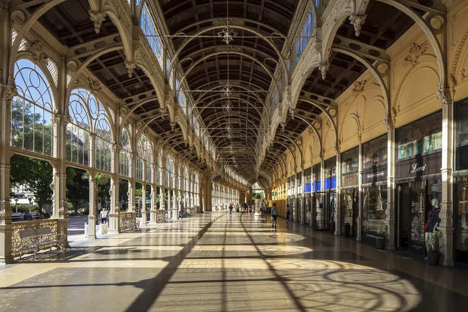
colonnade-interior-hall hero
Slunce proniká oblouky historické kolonády a vykresluje vzory na vyleštěné dlažbě.
alt CS Dlouhá litinová kolonáda s malovaným klenutým stropem, sluncem prozářenou dlažbou a obchody podél jedné strany.
alt EN Long cast-iron colonnade hall with painted vaulted ceiling, sunlit floor patterns and shops along one side.
alt DE Lange gusseiserne Kolonnadenhalle mit bemalter Gewölbedecke, sonnendurchfluteten Bodenmustern und Geschäften an einer Seite.
1600×1067 · z marienbad-18.jpg
kolonada-dome-detail good
Tmavá kupole a nápis mariánskolázeňské kolonády se ostře rýsují proti letní obloze.
alt CS Detail tmavé kupole a nápisu 'Kolonáda' nad bílou římsou a korintskými sloupy.
alt EN Close-up of the dark dome and 'Kolonáda' lettering above white cornice and Corinthian columns.
alt DE Nahaufnahme der dunklen Kuppel und des Schriftzugs 'Kolonáda' über weißem Gesims und korinthischen Säulen.
1600×1067 · z marienbad-16_B.jpg
Gastronomie 21
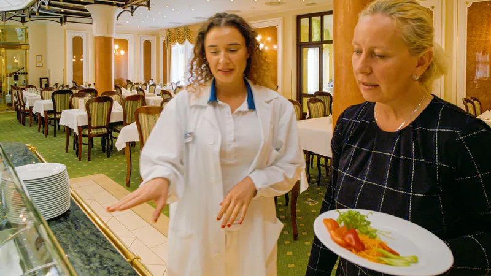
buffet-salad-plate good
Hostku se zájmem o zdravou výživu provádí bufetem s čerstvými barevnými saláty.
alt CS Zaměstnankyně v bílém plášti ukazuje na bufet, žena vedle ní drží talíř s čerstvým salátem.
alt EN A staff member in white gestures toward the buffet while a woman holds a plate of fresh salad.
alt DE Eine Mitarbeiterin in Weiß weist auf das Büfett, während eine Frau einen Teller mit frischem Salat hält.
1600×900 · z foto Fitness and Nutrition/FitNut-3.jpg
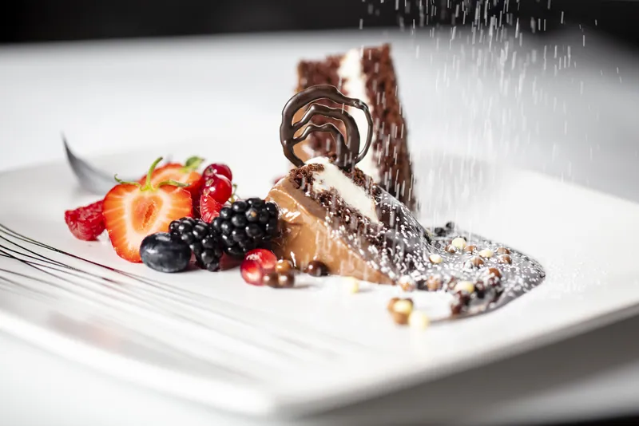
chocolate-dessert-berries hero
Poprášení cukrem korunuje vrstvený čokoládový dezert podávaný s čerstvým ovocem.
alt CS Vrstvený čokoládový dezert se šokoládovou ozdobou je poprášen cukrem vedle čerstvého ovoce.
alt EN A layered chocolate dessert with a chocolate curl is dusted with powdered sugar beside fresh berries.
alt DE Ein geschichtetes Schokoladendessert mit Schokoladenspirale wird neben frischen Beeren mit Puderzucker bestäubt.
1600×1067 · z 05_A_Healthy cuisine/Food-2.jpg
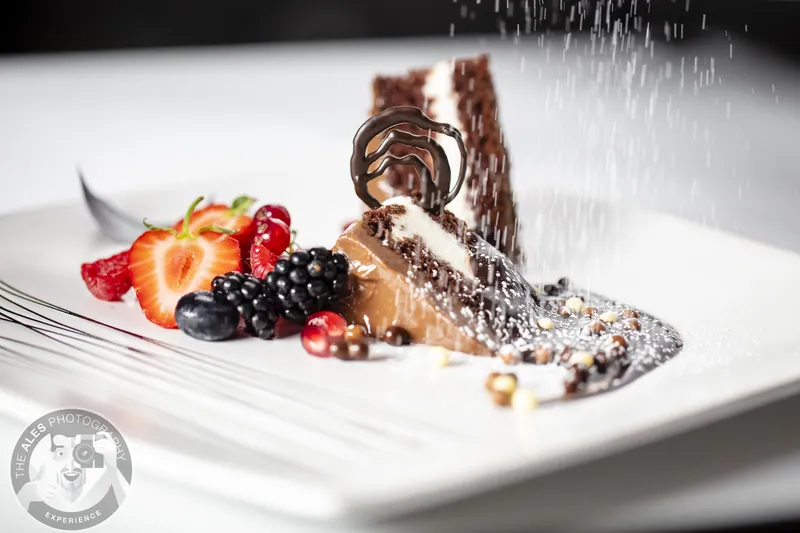
chocolate-dessert-berries-lowres weakneveřejné
Nižší rozlišení záběru čokoládového dezertu s viditelným vodoznakem fotografa.
alt CS Čokoládový dezert poprášený cukrem vedle čerstvého ovoce; vlevo dole viditelné vodoznak fotografa.
alt EN A layered chocolate dessert dusted with powdered sugar beside fresh berries; a photographer's watermark logo is visible bottom-left.
alt DE Ein mit Puderzucker bestäubtes Schokoladendessert neben frischen Beeren; unten links ein sichtbares Wasserzeichen des Fotografen.
1600×1066 · z 05_A_Healthy cuisine/Food_Low_Res-2.jpg
⚠ duplicate of P092 at lower resolution (2000x1333); visible photographer watermark logo makes it unusable for web
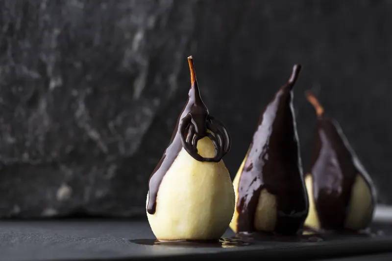
chocolate-poached-pears hero
Celé hrušky zahalené do tmavé čokolády tvoří působivou minimalistickou dezertní kompozici.
alt CS Celé hrušky přelité tmavou čokoládovou omáčkou stojí na tmavé břidlici na strukturovaném černém pozadí.
alt EN Whole pears coated in dark chocolate sauce stand on a dark slate against a textured black backdrop.
alt DE Ganze, mit dunkler Schokoladensauce überzogene Birnen stehen auf einer dunklen Schieferplatte vor strukturiertem schwarzen Hintergrund.
1600×1067 · z 05_A_Healthy cuisine/Food-3.jpg
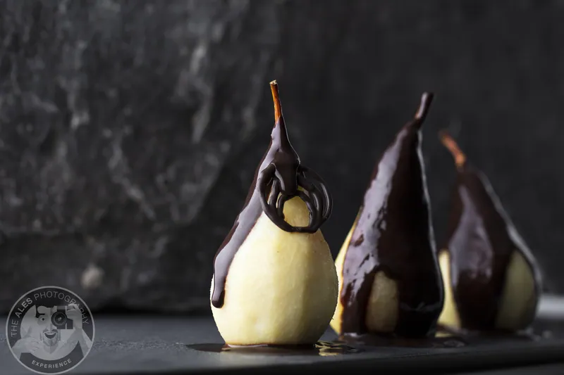
chocolate-poached-pears-lowres weakneveřejné
Nižší rozlišení záběru čokoládových hrušek s viditelným vodoznakem fotografa.
alt CS Celé hrušky přelité tmavou čokoládou na tmavé břidlici; vlevo dole viditelné vodoznak fotografa.
alt EN Whole pears coated in dark chocolate sauce on dark slate; a photographer's watermark logo is visible bottom-left.
alt DE Ganze, mit dunkler Schokoladensauce überzogene Birnen auf dunklem Schiefer; unten links ein sichtbares Wasserzeichen des Fotografen.
1600×1066 · z 05_A_Healthy cuisine/Food_Low_Res-3.jpg
⚠ duplicate of P093 at lower resolution (2000x1333); visible photographer watermark logo makes it unusable for web
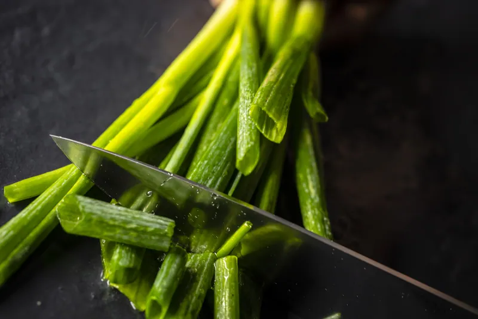
chopping-green-onions good
Čerstvá jarní cibulka jde pod nůž v tomto detailním záběru z přípravy v kuchyni.
alt CS Nůž v detailním záběru krájí zářivě zelenou jarní cibulku na tmavém prkénku.
alt EN A knife slices through bright green spring onions on a dark board, captured in close-up.
alt DE Ein Messer schneidet in Nahaufnahme leuchtend grüne Frühlingszwiebeln auf einem dunklen Brett.
1600×1067 · z 05_A_Healthy cuisine/Food-5.jpg
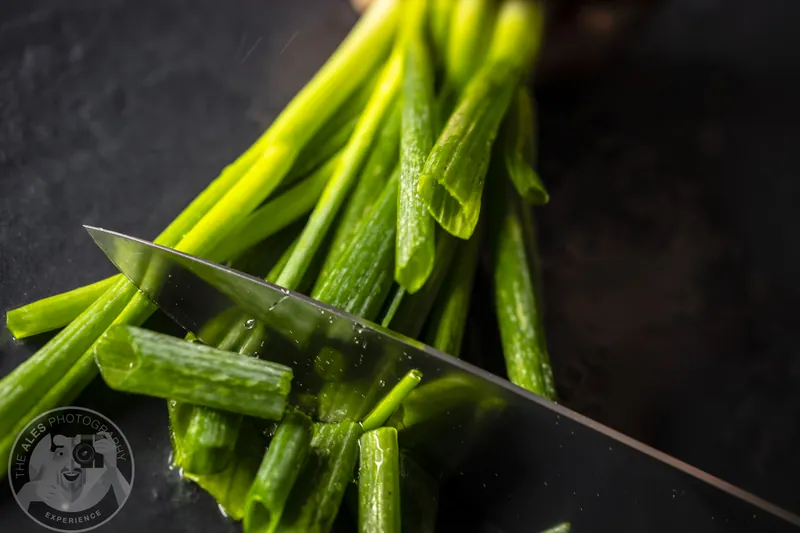
chopping-green-onions-lowres weakneveřejné
Nižší rozlišení záběru krájení jarní cibulky s viditelným vodoznakem fotografa.
alt CS Nůž krájí jarní cibulku na tmavém prkénku; vlevo dole viditelné vodoznak fotografa.
alt EN A knife slices spring onions on a dark board; a photographer's watermark logo is visible bottom-left.
alt DE Ein Messer schneidet Frühlingszwiebeln auf einem dunklen Brett; unten links ein sichtbares Wasserzeichen des Fotografen.
1600×1066 · z 05_A_Healthy cuisine/Food_Low_Res-5.jpg
⚠ duplicate of P095 at lower resolution (2000x1333); visible photographer watermark logo makes it unusable for web
flambe-vegetable-pan hero
Moment flambování zachycuje dramatickou atmosféru živé kuchyně.
alt CS Z pánve s restovanou zeleninou na tmavém sporáku šlehají dramatické plameny.
alt EN Flames rise dramatically from a pan of sautéed vegetables on a dark stovetop.
alt DE Aus einer Pfanne mit gebratenem Gemüse schlagen auf einem dunklen Herd dramatische Flammen empor.
1600×1067 · z 05_A_Healthy cuisine/Food-1.jpg
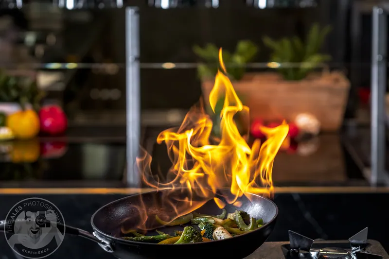
flambe-vegetable-pan-lowres weakneveřejné
Nižší rozlišení záběru flambování s viditelným vodoznakem fotografa.
alt CS Plameny šlehají z pánve s restovanou zeleninou na tmavém sporáku; vlevo dole je viditelné vodoznak fotografa.
alt EN Flames rise from a pan of sautéed vegetables on a dark stovetop; a photographer's watermark logo is visible bottom-left.
alt DE Flammen schlagen aus einer Pfanne mit gebratenem Gemüse auf einem dunklen Herd; unten links ist ein Fotografen-Wasserzeichen sichtbar.
1600×1066 · z 05_A_Healthy cuisine/Food_Low_Res-1.jpg
⚠ duplicate of P091 at lower resolution (2000x1333); visible photographer watermark logo makes it unusable for web
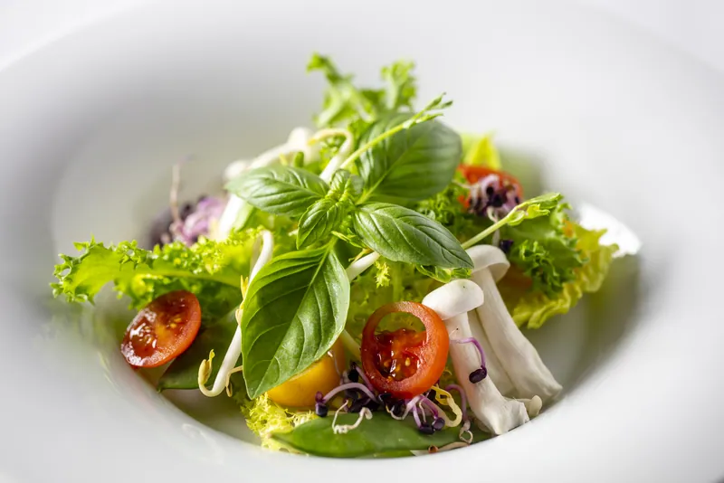
green-salad-tomatoes-basil hero
Čerstvý barevný salát z frisée, cherry rajčat, hlívy enoki a klíčků.
alt CS Komponovaný salát z frisée salátu, cherry rajčat, hlívy enoki, bazalky a klíčků v bílé misce.
alt EN A composed salad of frisée lettuce, cherry tomatoes, enoki mushrooms, basil and sprouts in a white bowl.
alt DE Ein arrangierter Salat aus Frisée-Salat, Kirschtomaten, Enoki-Pilzen, Basilikum und Sprossen in einer weißen Schale.
1600×1067 · z 05_A_Healthy cuisine/Food-8.jpg
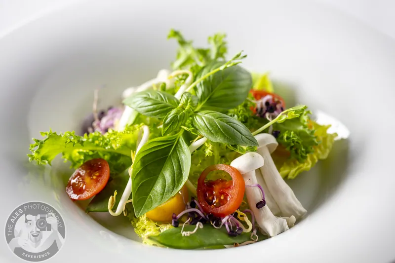
green-salad-tomatoes-basil-lowres weakneveřejné
Nižší rozlišení záběru frisée salátu s viditelným vodoznakem fotografa.
alt CS Komponovaný salát z frisée, cherry rajčat, hlívy enoki a bazalky; vlevo dole viditelné vodoznak fotografa.
alt EN A composed salad of frisée, cherry tomatoes, enoki mushrooms and basil; a photographer's watermark logo is visible bottom-left.
alt DE Ein arrangierter Salat aus Frisée, Kirschtomaten, Enoki-Pilzen und Basilikum; unten links ein sichtbares Wasserzeichen des Fotografen.
1600×1066 · z 05_A_Healthy cuisine/Food_Low_Res-8.jpg
⚠ duplicate of P098 at lower resolution (2000x1333); visible photographer watermark logo makes it unusable for web
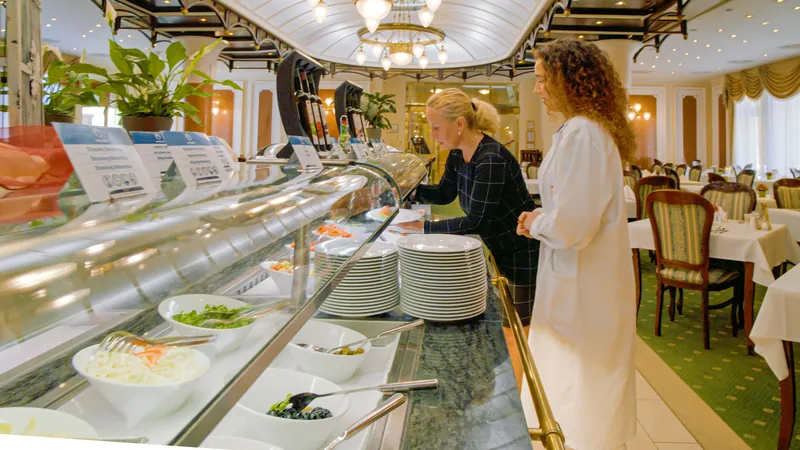
hotel-buffet-line good
Hosté v županech si mezi procedurami vybírají u čerstvého salátového bufetu v hotelové jídelně.
alt CS Dvě ženy v županech si vybírají u salátového bufetu v hotelové jídelně s lustry.
alt EN Two women in bathrobes browsing a hotel buffet salad bar in a chandeliered dining room.
alt DE Zwei Frauen in Bademänteln an einem Salatbuffet in einem mit Kronleuchtern ausgestatteten Hotel-Speisesaal.
1600×900 · z foto Fitness and Nutrition/FitNut-1.jpg
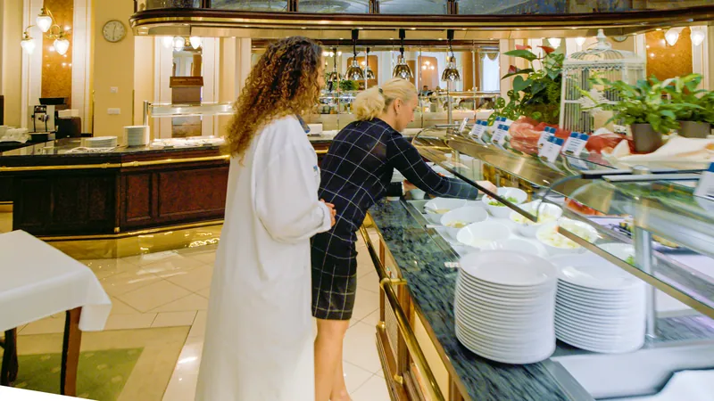
hotel-buffet-plates good
Hosté si vybírají u bufetu, který je součástí konceptu zdravé kuchyně hotelu.
alt CS Dvě ženy si vybírají u hotelového bufetu s naskládanými bílými talíři a saláty.
alt EN Two women browse a hotel buffet counter lined with stacked white plates and salad trays.
alt DE Zwei Frauen stehen an einem Hotelbüfett mit gestapelten weißen Tellern und Salatschalen.
1600×900 · z foto Fitness and Nutrition/FitNut-2.jpg
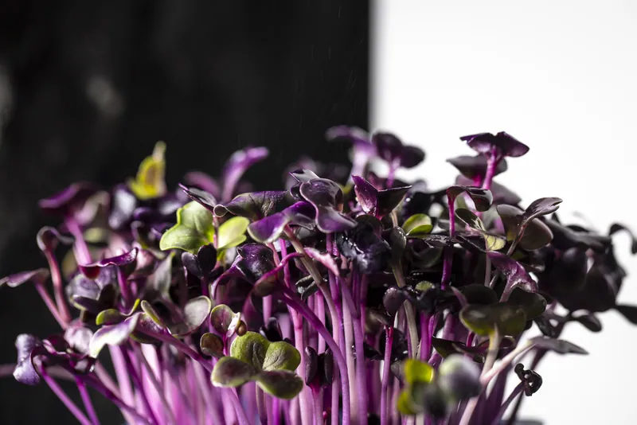
purple-microgreens-macro good
Makro záběr sytě zbarvených mikrobylinek určených jako ozdoba v kuchyni zdravé stravy.
alt CS Detailní záběr fialovo-zelených mikrobylinek s tenkými růžovými stonky na tmavém a bílém pozadí.
alt EN Close-up of purple and green microgreens with slender pink stems against a dark and white backdrop.
alt DE Nahaufnahme violett-grüner Microgreens mit dünnen pinkfarbenen Stielen vor dunklem und weißem Hintergrund.
1600×1067 · z 05_A_Healthy cuisine/Food-4.jpg
purple-microgreens-macro-lowres weakneveřejné
Nižší rozlišení makro záběru mikrobylinek s viditelným vodoznakem fotografa.
alt CS Detailní záběr fialovo-zelených mikrobylinek; vlevo dole viditelné vodoznak fotografa.
alt EN Close-up of purple and green microgreens; a photographer's watermark logo is visible bottom-left.
alt DE Nahaufnahme violett-grüner Microgreens; unten links ein sichtbares Wasserzeichen des Fotografen.
1600×1066 · z 05_A_Healthy cuisine/Food_Low_Res-4.jpg
⚠ duplicate of P094 at lower resolution (2000x1333); visible photographer watermark logo makes it unusable for web
salad-macro-closeup good
Makro detail odhaluje texturu a detaily surovin frisée salátu.
alt CS Těsný makro záběr stejného salátu ukazuje lístky bazalky, půlky cherry rajčat, hlívu enoki a klíčky.
alt EN A tight macro crop of the same salad shows basil leaves, cherry tomato halves, enoki mushrooms and sprouts.
alt DE Ein enger Makro-Ausschnitt desselben Salats zeigt Basilikumblätter, halbierte Kirschtomaten, Enoki-Pilze und Sprossen.
1600×1067 · z 05_A_Healthy cuisine/Food-9.jpg
⚠ same dish as P098, tighter macro crop rather than a straight duplicate
salad-macro-closeup-lowres weakneveřejné
Nižší rozlišení makro záběru salátu s viditelným vodoznakem fotografa.
alt CS Těsný makro záběr salátu s bazalkou, rajčetem a hlívou enoki; vlevo dole viditelné vodoznak fotografa.
alt EN A tight macro crop of the salad showing basil, tomato and enoki mushrooms; a photographer's watermark logo is visible bottom-left.
alt DE Ein enger Makro-Ausschnitt des Salats mit Basilikum, Tomate und Enoki-Pilzen; unten links ein sichtbares Wasserzeichen des Fotografen.
1600×1066 · z 05_A_Healthy cuisine/Food_Low_Res-9.jpg
⚠ duplicate of P099 at lower resolution (2000x1333); visible photographer watermark logo makes it unusable for web
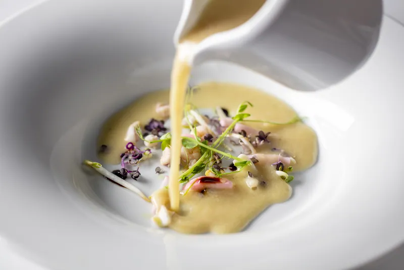
soup-pour-tableside hero
Nalévání přímo u stolu proměňuje jednoduchou krémovou polévku v malé divadlo.
alt CS Krémová polévka je u stolu nalévána z malého džbánku na oblohu z nakrájených ingrediencí a mikrobylinek.
alt EN A creamy soup is poured tableside from a small jug over a garnish of diced ingredients and microgreens.
alt DE Eine cremige Suppe wird am Tisch aus einem kleinen Krug über eine Garnitur aus gewürfelten Zutaten und Microgreens gegossen.
1600×1067 · z 05_A_Healthy cuisine/Food-6.jpg
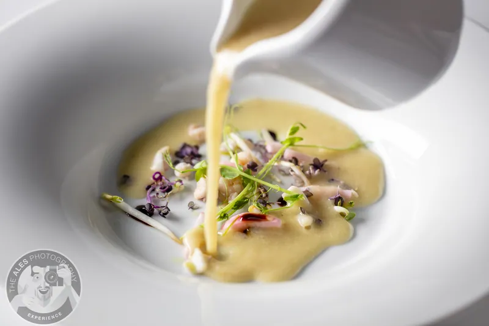
soup-pour-tableside-lowres weakneveřejné
Nižší rozlišení záběru nalévání polévky u stolu s viditelným vodoznakem fotografa.
alt CS Krémová polévka je nalévána u stolu na oblohu z nakrájených ingrediencí; vlevo dole viditelné vodoznak fotografa.
alt EN A creamy soup is poured tableside over a garnish of diced ingredients; a photographer's watermark logo is visible bottom-left.
alt DE Eine cremige Suppe wird am Tisch über eine Garnitur aus gewürfelten Zutaten gegossen; unten links ein sichtbares Wasserzeichen des Fotografen.
1600×1066 · z 05_A_Healthy cuisine/Food_Low_Res-6.jpg
⚠ duplicate of P096 at lower resolution (2000x1333); visible photographer watermark logo makes it unusable for web
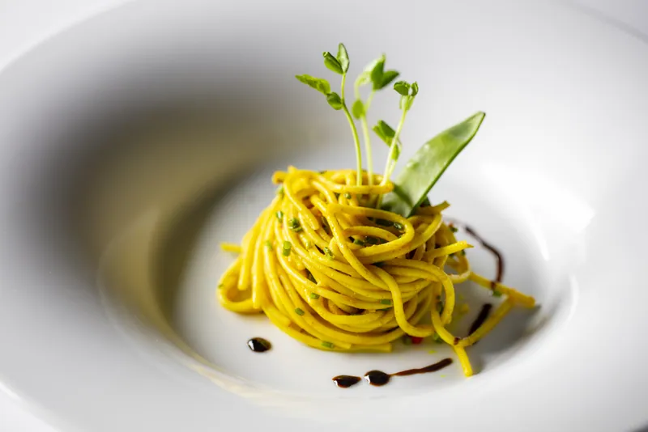
yellow-pasta-nest hero
Jedna porce žluté pasty, precizně servírovaná s mikrobylinkami a kapkami balzamika.
alt CS Úhledné hnízdo žluté pasty je servírované s mikrobylinkami a tečkami tmavé balzamikové redukce.
alt EN A neat nest of yellow pasta is plated with microgreens and dots of dark balsamic reduction.
alt DE Ein ordentliches Nest gelber Pasta ist mit Microgreens und Tupfen dunkler Balsamico-Reduktion angerichtet.
1600×1067 · z 05_A_Healthy cuisine/Food-7.jpg
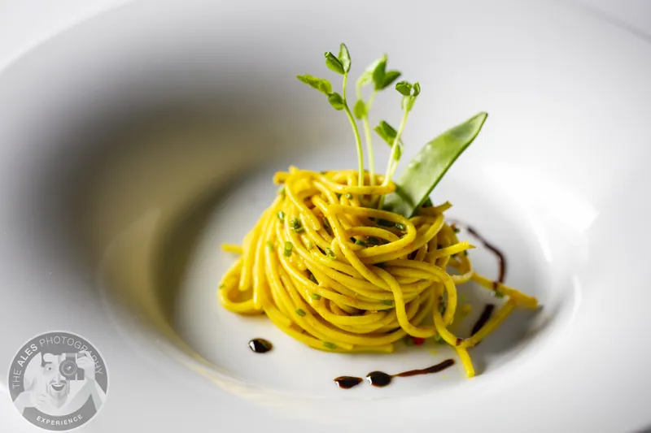
yellow-pasta-nest-lowres weakneveřejné
Nižší rozlišení záběru servírované pasty s viditelným vodoznakem fotografa.
alt CS Hnízdo žluté pasty s mikrobylinkami a kapkami balzamika; vlevo dole viditelné vodoznak fotografa.
alt EN A nest of yellow pasta plated with microgreens and balsamic dots; a photographer's watermark logo is visible bottom-left.
alt DE Ein Nest gelber Pasta mit Microgreens und Balsamico-Punkten; unten links ein sichtbares Wasserzeichen des Fotografen.
1600×1066 · z 05_A_Healthy cuisine/Food_Low_Res-7.jpg
⚠ duplicate of P097 at lower resolution (2000x1333); visible photographer watermark logo makes it unusable for web
Pitná kúra 5
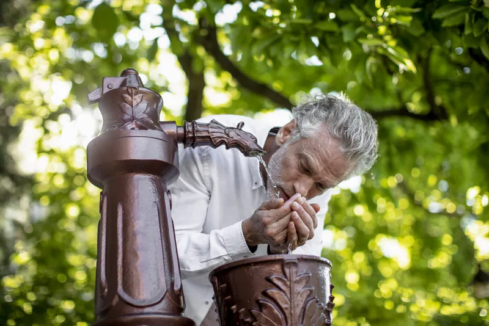
elderly-man-drinking-cure hero
Host si vychutnává léčivou minerální vodu přímo u zahradní kašny.
alt CS Muž se šedivými vlasy pije minerální vodu z dlaní u litinové kašny v přírodě.
alt EN Silver-haired man in a white shirt drinks mineral water cupped in his hands from an ornate cast-iron spring fountain outdoors.
alt DE Ein Mann mit grauem Haar trinkt Mineralwasser aus den Händen an einem schmiedeeisernen Brunnen im Freien.
1600×1067 · z 11_A_Drinking Cure/Drink_Cure-2.jpg
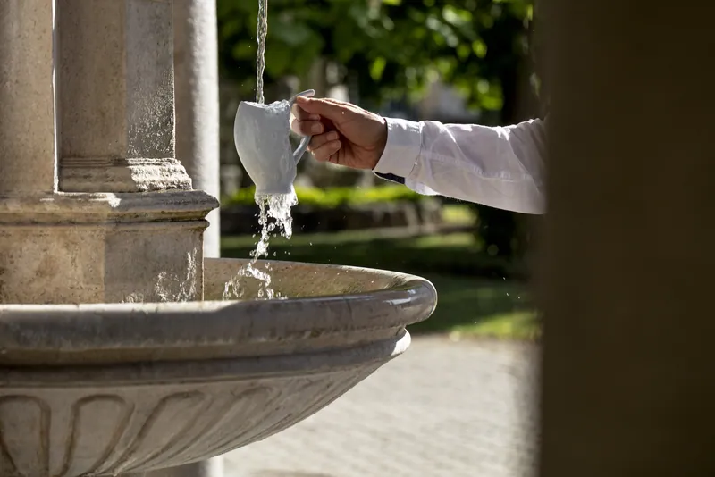
spa-cup-colonnade-pour hero
Klasický lázeňský pohárek se plní minerální vodou pod sloupy kolonády.
alt CS Ruka drží bílý porcelánový lázeňský pohárek pod pramenem minerální vody u sloupu kolonády.
alt EN A hand holds a white porcelain spa cup under a stream of mineral water at a colonnade pillar.
alt DE Eine Hand hält einen weißen Porzellan-Kurbecher unter einen Mineralwasserstrahl an einer Kolonnadensäule.
1600×1067 · z 11_A_Drinking Cure/Drink_Cure-3.jpg
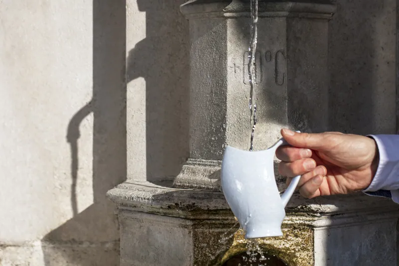
spa-cup-daylight-spring hero
Sluneční světlo dopadá na proud minerální vody, zatímco se pohárek plní u pramenného sloupu.
alt CS Ruka drží bílý lázeňský džbánek pod výtokem minerální vody na osluněném kamenném sloupu s údajem o teplotě.
alt EN A hand holds a white spa jug beneath a mineral water spout on a sunlit stone pillar marked with its temperature.
alt DE Eine Hand hält einen weißen Kurkrug unter einen Mineralwasserauslauf an einer sonnenbeschienenen Steinsäule mit Temperaturangabe.
1600×1067 · z 11_A_Drinking Cure/Drink_Cure-5.jpg
⚠ Companion to P197, same spring pillar in daylight
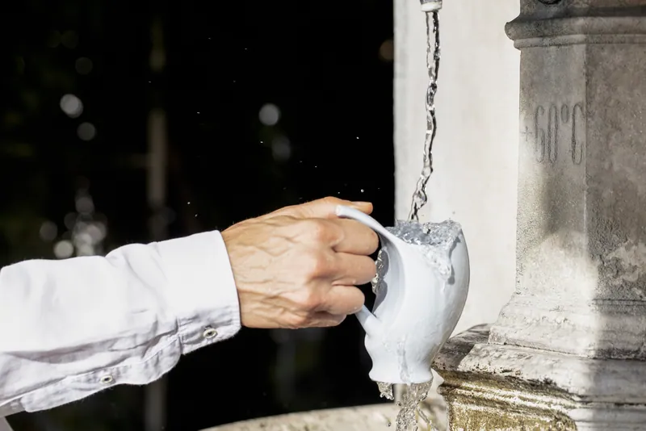
spa-cup-night-spring hero
I po setmění pramen dál protéká, kamenná deska nese přesnou teplotu vody.
alt CS Ruka plní bílý lázeňský pohárek minerální vodou v noci u kamenného pramene s vyrytou teplotou.
alt EN A hand fills a white spa cup with mineral water at night beside a stone spring marked with a temperature inscription.
alt DE Eine Hand füllt bei Nacht einen weißen Kurbecher mit Mineralwasser an einer Steinquelle mit Temperaturangabe.
1600×1067 · z 11_A_Drinking Cure/Drink_Cure-4.jpg
⚠ Atmospheric night shot; companion to P198, same spring in daylight
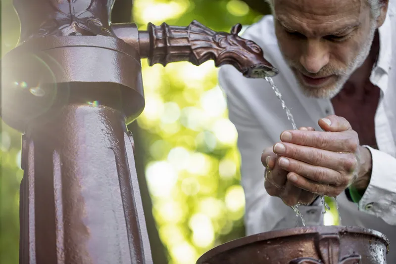
spring-drinking-cure hero
Pití vody přímo u pramene, rituál, který je jádrem lázeňské kúry.
alt CS Starší muž pije z dlaní minerální vodu z ozdobného bronzového pramenního výtoku venku.
alt EN Older man cupping his hands to drink mineral water from an ornate bronze spring spout outdoors.
alt DE Älterer Mann trinkt mit den Händen Mineralwasser aus einem kunstvollen bronzenen Quellauslauf im Freien.
1600×1067 · z 11_A_Drinking Cure/Drink_Cure-1.jpg
⚠ No traditional spa cup visible; water is taken directly by hand.
Fitness a pohyb 48
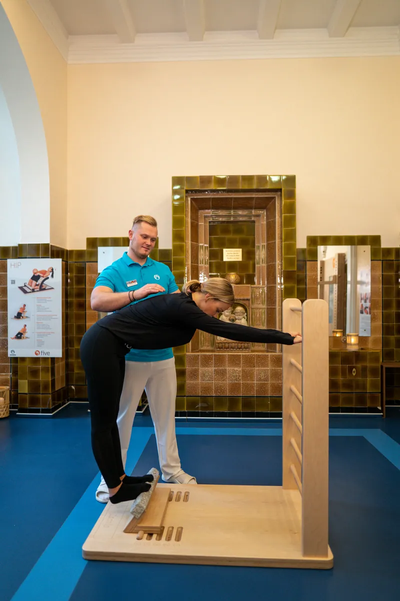
assisted-ladder-stretch good
Dřevěný cvičební rám slouží i jako pomůcka pro protažení, v pozadí originální keramické obklady místnosti.
alt CS Trenér podpírá ženu předklánějící se na dřevěném cvičebním nářadí před zdobenými kachlovými panely.
alt EN Trainer supports a woman leaning forward on a wooden gymnastics apparatus in front of ornate tiled wall panels.
alt DE Trainer stützt eine Frau, die sich auf einem hölzernen Turngerät vor kunstvoll gekachelten Wandpaneelen nach vorne beugt.
1067×1600 · z _Rykovský_foto five konzept/Marianske-lazne-fit-45.jpg
⚠ Similar setting to P144/P145 (same room and apparatus).
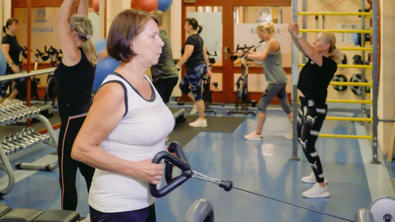
cable-machine-training good
Posilování na kladkovém stroji, v pozadí právě probíhá skupinová lekce.
alt CS Žena v popředí cvičí na kladkovém stroji, v pozadí skupina cvičí s odporovými gumami.
alt EN A woman pulls a cable-machine handle in the foreground while a group trains with resistance bands behind her.
alt DE Eine Frau zieht im Vordergrund einen Kabelzuggriff, während im Hintergrund eine Gruppe mit Widerstandsbändern trainiert.
1600×900 · z foto Fitness and Nutrition/FitNut-5.jpg
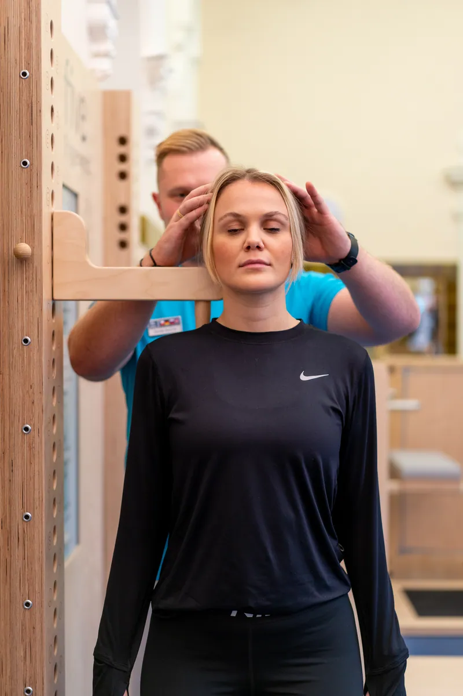
calm-neck-therapy hero
Klidný okamžik soustředění během vedeného cvičení na držení těla.
alt CS Ruce trenéra rámují hlavu ženy se zavřenýma očima během klidného cvičení na držení těla u dřevěného stojanu.
alt EN Trainer's hands frame a woman's head, eyes closed, during a calm posture exercise at the wooden wall rack.
alt DE Die Hände des Trainers umrahmen den Kopf einer Frau mit geschlossenen Augen während einer ruhigen Haltungsübung am hölzernen Wandregal.
1067×1600 · z _Rykovský_foto five konzept/Marianske-lazne-fit-38.jpg
⚠ Near-duplicate of P137, same setup, eyes closed
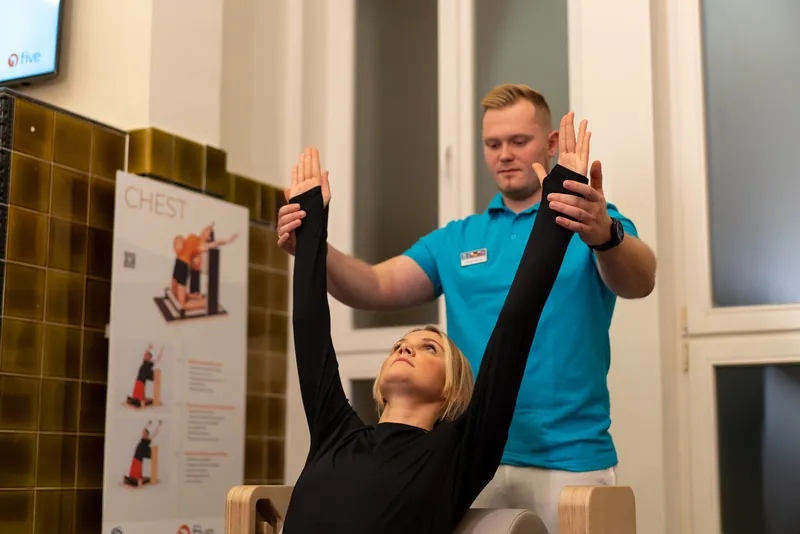
chest-stretch-training good
Podporované protažení hrudníku, součást cíleného mobilizačního programu studia.
alt CS Trenér vede ženu při protažení hrudníku s pažemi nad hlavou na dřevěném rámu, vedle plakát s nápisem Chest.
alt EN Trainer guides a woman through an overhead chest stretch on a wooden frame, instructional poster labelled Chest beside them.
alt DE Trainer leitet eine Frau bei einer Brustdehnung mit erhobenen Armen an einem Holzrahmen an, daneben ein Poster mit der Aufschrift Chest.
1600×1067 · z _Rykovský_foto five konzept/Marianske-lazne-fit-10.jpg
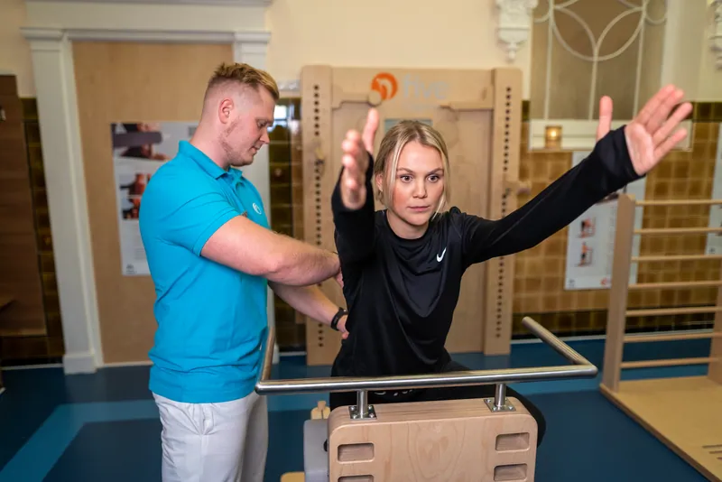
close-standing-stretch good
Bližší pohled na praktické vedení trenéra během cvičení na rovnováhu.
alt CS Bližší záběr téhož cvičení na rovnováhu, trenér přidržuje paži ženy u dřevěného nástěnného přístroje.
alt EN Closer crop of the same balance exercise, trainer steadying a woman's arm at the wooden wall apparatus.
alt DE Näherer Ausschnitt derselben Balanceübung, Trainer stützt den Arm einer Frau am hölzernen Wandgerät.
1600×1067 · z _Rykovský_foto five konzept/Marianske-lazne-fit-32.jpg
⚠ Near-duplicate of P131-P133, closest crop of the sequence
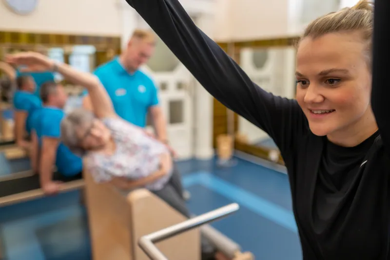
dynamic-stretch-closeup good
Bližší, intimnější záběr téhož okamžiku protažení během skupinové lekce.
alt CS Detailní záběr na usmívající se mladou ženu se zdviženou paží při protahování, v pozadí rozostřená skupinová lekce.
alt EN Close view of a young woman stretching with arm raised, smiling, group session visible out of focus behind her.
alt DE Nahaufnahme einer jungen, lächelnden Frau mit erhobenem Arm beim Dehnen, im Hintergrund unscharf die Gruppenlektion.
1600×1067 · z _Rykovský_foto five konzept/Marianske-lazne-fit-54.jpg
⚠ Near-duplicate of P150.
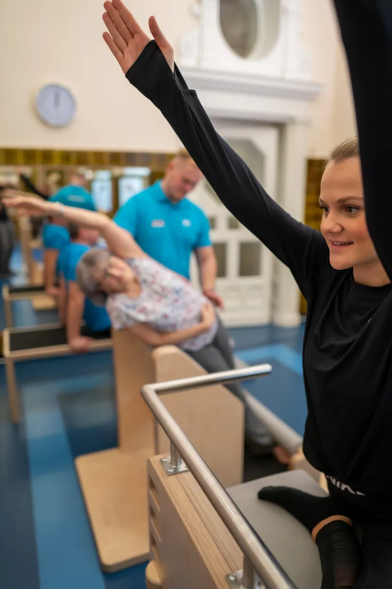
dynamic-stretch-portrait good
Účastnice zvedá paži během protažení, zatímco skupinová lekce pokračuje kolem ní.
alt CS Mladá žena v černém sportovním oblečení se protahuje se zdviženou paží, v pozadí rozostřená skupinová lekce.
alt EN Young woman in black activewear stretches with arm raised overhead, group exercise session blurred in the background.
alt DE Junge Frau in schwarzer Sportkleidung dehnt sich mit erhobenem Arm, im Hintergrund unscharf eine Gruppenübung.
1067×1600 · z _Rykovský_foto five konzept/Marianske-lazne-fit-53.jpg
⚠ Near-duplicate of P151.
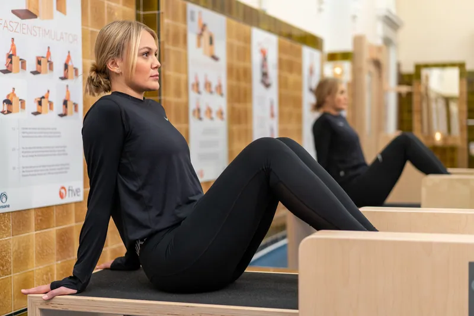
fascia-stretch-bench good
Cvičení na uvolnění fascií na typickém dřevěném přístroji studia.
alt CS Žena sedí opřená na dřevěné lavici fasciálního stimulátoru, v pozadí obklad se cvičebním plakátem.
alt EN Woman seated on a wooden fascia-stimulator bench, leaning back, tiled wall with instructional poster behind her.
alt DE Frau sitzt zurückgelehnt auf einer hölzernen Faszienstimulator-Bank, im Hintergrund gefliester Wand mit Übungsposter.
1600×1067 · z _Rykovský_foto five konzept/Marianske-lazne-fit-06.jpg
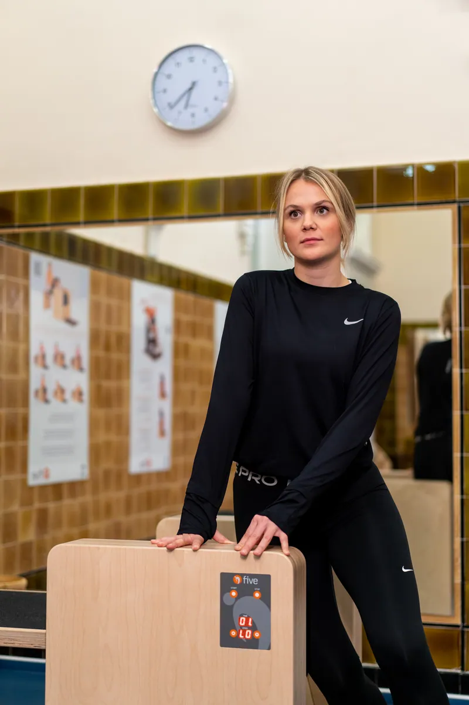
fitness-studio-portrait good
Mezi cviky ve studiu five, umístěném v historických obložených sálech Mariánských Lázní.
alt CS Žena ve sportovním oblečení se opírá o dřevěný cvičební přístroj na fascie v obloženém fitness studiu, v pozadí nástěnné hodiny.
alt EN Woman in black activewear leaning on a wooden fascia-stretch apparatus in a tiled fitness studio, wall clock behind her.
alt DE Frau in schwarzer Sportkleidung lehnt an einem hölzernen Faszien-Trainingsgerät in einem gefliesten Fitnessstudio, im Hintergrund eine Wanduhr.
1067×1600 · z _Rykovský_foto five konzept/Marianske-lazne-fit-03.jpg
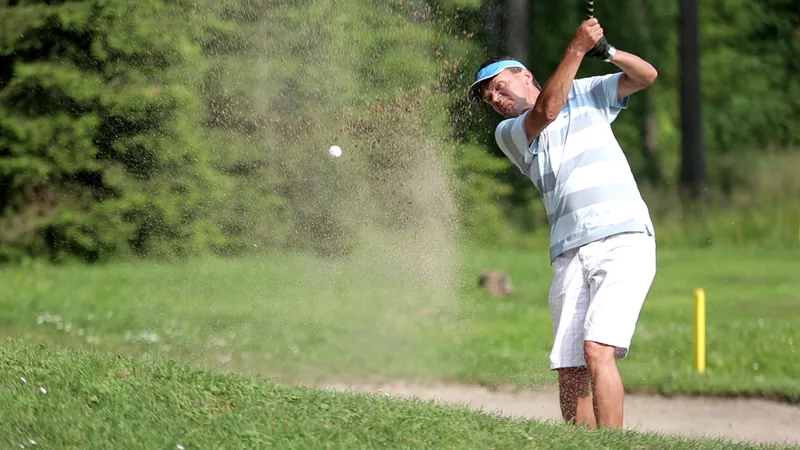
golfer-bunker-shot weakneveřejné
Slunečné kolo golfu doplňuje aktivní stránku pobytu v Mariánských Lázních.
alt CS Golfista v modré čepici odpaluje míček z pískové bunkerové jamky, kolem se zvedá písek, v pozadí stromy.
alt EN Golfer in a blue cap hitting a ball out of a sand bunker, spray of sand, trees in the background.
alt DE Golfer mit blauer Kappe schlägt einen Ball aus einem Sandbunker, Sandwolke, Bäume im Hintergrund.
975×548 · z Marianske Lazne (18).png
⚠ Very low resolution (975x548 px), generic stock-photo look.
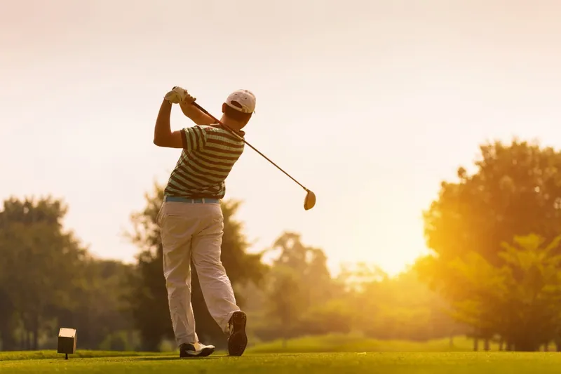
golfer-sunset-swing hero
Zlaté světlo na fairwayi korunuje odpoledne strávené golfem u Mariánských Lázní.
alt CS Golfista zachycený uprostřed švihu na fairwayi při zapadajícím slunci, v protisvětle na pozadí teplé oblohy.
alt EN Golfer captured mid-swing on a fairway at golden-hour sunset, backlit against a warm glowing sky.
alt DE Golfer beim Schwung auf dem Fairway im goldenen Abendlicht, hintergrundbeleuchtet vor warmem Sonnenuntergang.
1280×853 · z golf-player-small.jpg
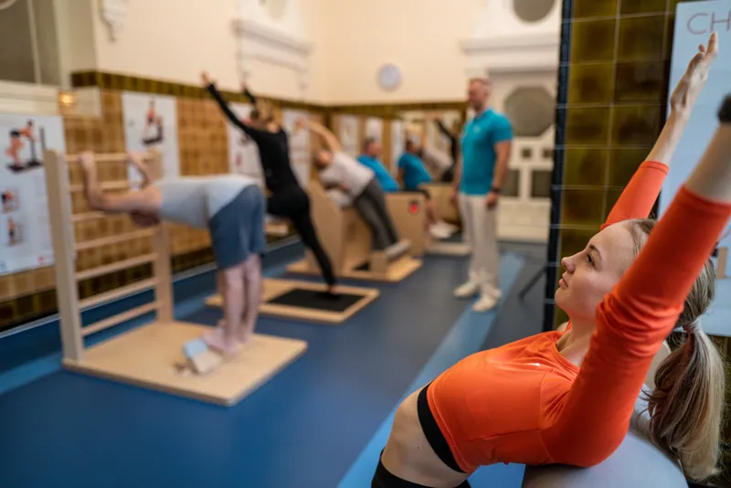
group-class-foreground good
Hostka v popředí se protahuje, zatímco skupinová lekce v pozadí pokračuje.
alt CS Žena v oranžovém topu se protahuje se zdviženou paží v popředí, v pozadí pokračuje skupinová lekce cvičení.
alt EN Woman in orange top stretches with arm raised in the foreground, group exercise class continuing behind her.
alt DE Frau in orangefarbenem Top dehnt sich mit erhobenem Arm im Vordergrund, im Hintergrund läuft die Gruppenübung weiter.
1600×1067 · z _Rykovský_foto five konzept/Marianske-lazne-fit-56.jpg
⚠ Near-duplicate of P152 and P154.
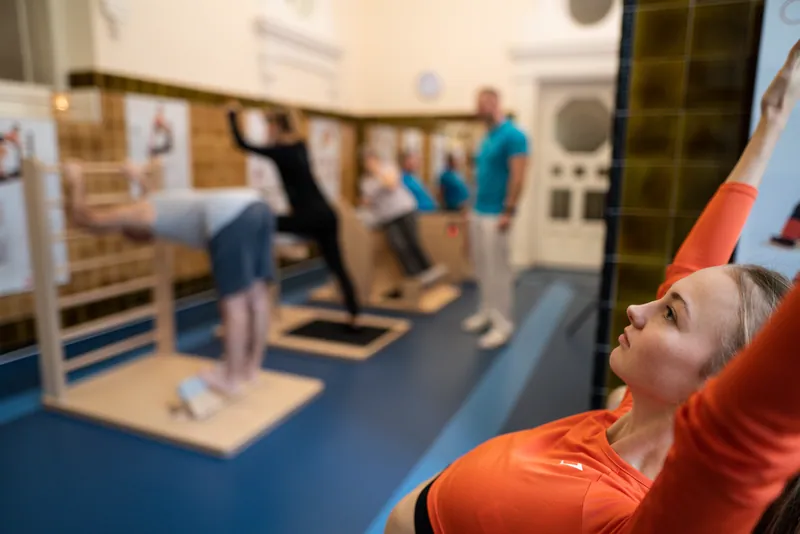
group-class-wide good
Nejširší záběr série zachycuje plnou energii skupinové tréninkové lekce.
alt CS Širší záběr na skupinovou lekci se ženou v oranžovém topu blízko kamery a dalšími cvičícími v pozadí.
alt EN Wide view of the group class with a woman in orange stretching close to camera and others training in the background.
alt DE Weite Ansicht der Gruppenlektion mit einer Frau in Orange nahe der Kamera und weiteren Trainierenden im Hintergrund.
1600×1067 · z _Rykovský_foto five konzept/Marianske-lazne-fit-57.jpg
⚠ Near-duplicate of P152 and P153, same class sequence.
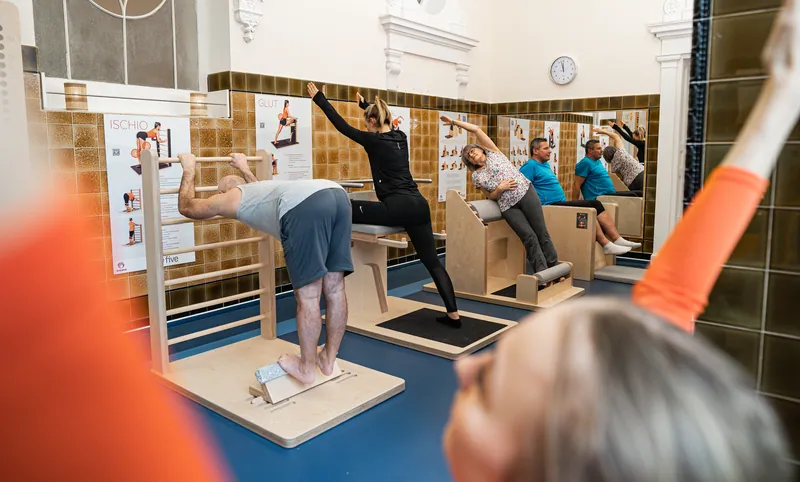
group-fitness-class good
Celá skupinová lekce probíhá na několika dřevěných cvičebních stanicích v historickém sále.
alt CS Skupinová cvičební lekce s dřevěnými cvičebními rámy, více účastníků se protahuje v kachlovém historickém sále.
alt EN Group exercise class using wooden training frames, several participants stretching in a tiled historic hall.
alt DE Gruppentrainingskurs mit hölzernen Trainingsrahmen, mehrere Teilnehmer dehnen sich in einem gekachelten historischen Saal.
1600×963 · z _Rykovský_foto five konzept/Marianske-lazne-fit-55.jpg
⚠ Near-duplicate of P153/P154, same class.
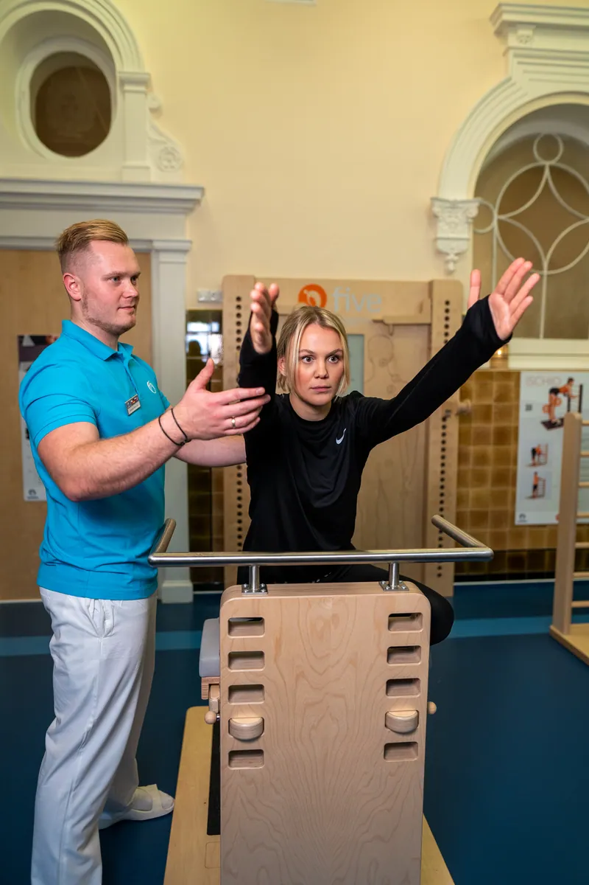
guided-arm-extension good
Další záběr vedeného cvičení na rovnováhu u nástěnného přístroje.
alt CS Trenér a žena u stejného dřevěného nástěnného přístroje, paže natažená při vedeném cvičení na rovnováhu.
alt EN Trainer and woman at the same wooden wall apparatus, her arm extended in a guided balance exercise.
alt DE Trainer und Frau am selben hölzernen Wandgerät, ihr Arm ausgestreckt bei einer angeleiteten Balanceübung.
1067×1600 · z _Rykovský_foto five konzept/Marianske-lazne-fit-29.jpg
⚠ Near-duplicate of P131
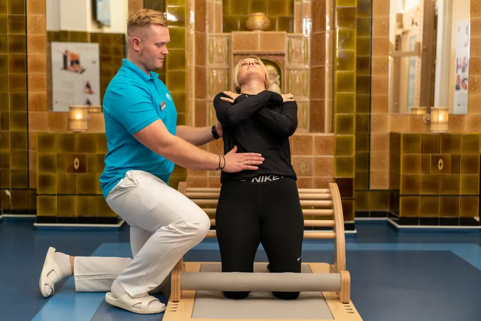
guided-neck-stretch good
Vedené protažení krku pokračuje ve cvičební sekvenci v obložené nice.
alt CS Trenér vede ženu klečící na dřevěné plošině při protažení krku s pohledem vzhůru, ruce na její hlavě.
alt EN Trainer guides a woman kneeling on a wooden platform through a chin-up neck stretch, hands on her head.
alt DE Trainer leitet eine auf einer Holzplattform kniende Frau bei einer Nackendehnung mit Blick nach oben an, Hände am Kopf.
1600×1067 · z _Rykovský_foto five konzept/Marianske-lazne-fit-17.jpg
⚠ Near-duplicate of P121, same series
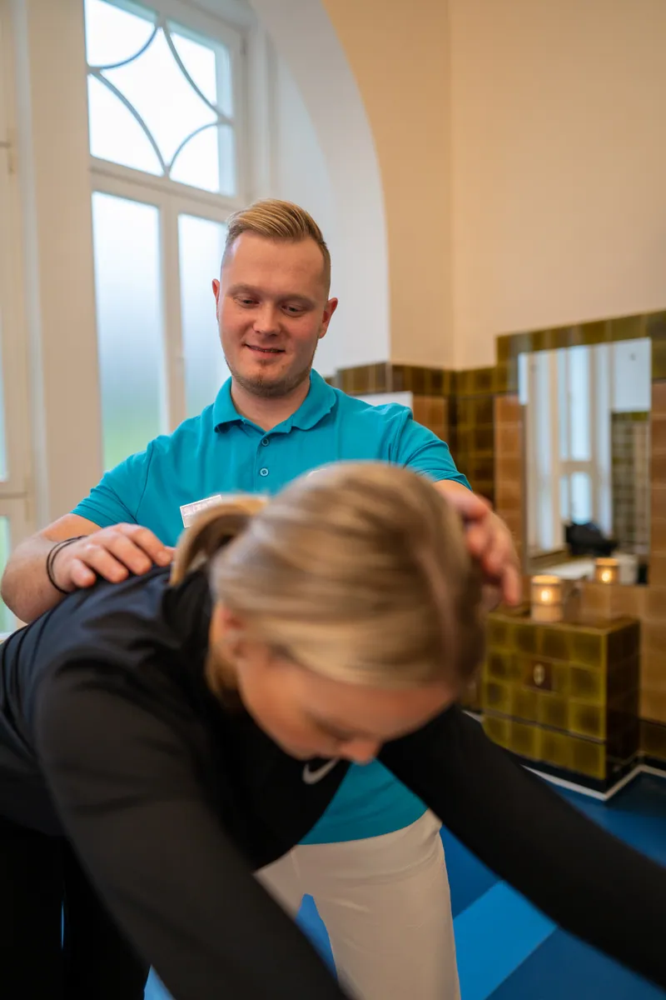
guided-side-stretch good
Vedené protažení v jedné z historických místností lázeňské budovy s původními kachlovými kamny v pozadí.
alt CS Trenér v tyrkysové polokošili vede ženu při bočním předklonu vedle kachlových kamen v historické místnosti.
alt EN Trainer in a teal polo guides a woman through a forward side stretch beside a tiled stove in a historic spa room.
alt DE Trainer im türkisfarbenen Poloshirt leitet eine Frau bei einer seitlichen Vorwärtsdehnung neben einem gekachelten Ofen in einem historischen Kursraum an.
1067×1600 · z _Rykovský_foto five konzept/Marianske-lazne-fit-44.jpg
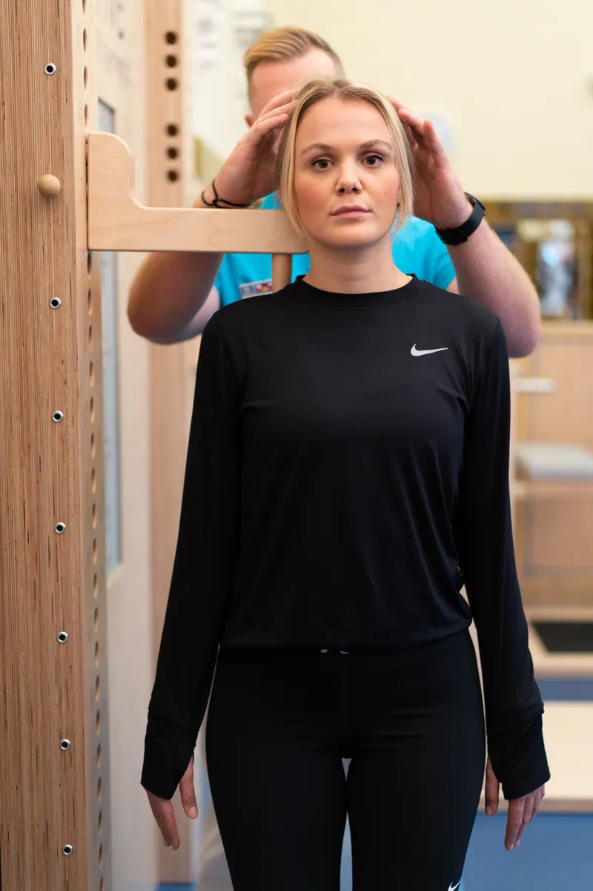
head-neck-adjustment good
Vedené cvičení na držení těla u nástěnného tréninkového stojanu studia.
alt CS Trenér stojí za ženou u dřevěného nástěnného stojanu, ruce kolem její hlavy během cvičení na držení těla.
alt EN Trainer stands behind a woman by a wooden wall rack, hands framing her head during a posture exercise.
alt DE Trainer steht hinter einer Frau an einem hölzernen Wandregal, Hände um ihren Kopf während einer Haltungsübung.
1067×1600 · z _Rykovský_foto five konzept/Marianske-lazne-fit-37.jpg
⚠ Near-duplicate of P138, same setup, eyes open
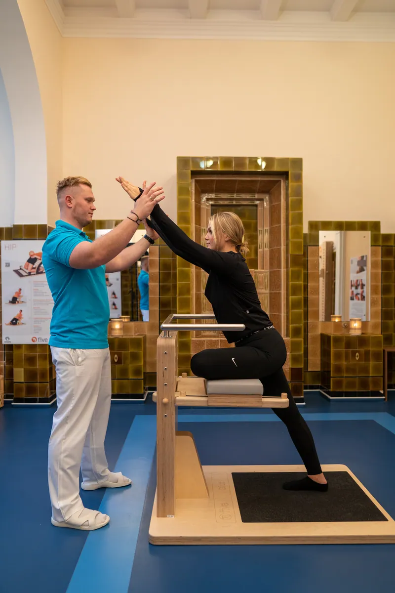
high-five-full-scene hero
Celá scéna studia se spojuje v tomto oslavném gestu plácnutí rukou.
alt CS Širokoúhlý záběr trenéra a ženy na dřevěném přístroji při plácnutí rukou, v pozadí celý historický sál.
alt EN Wide shot of a trainer and woman on a wooden apparatus sharing a high-five, full historic hall visible around them.
alt DE Weitwinkelaufnahme eines Trainers und einer Frau auf einem Holzgerät beim High-Five, der gesamte historische Saal im Hintergrund sichtbar.
1067×1600 · z _Rykovský_foto five konzept/Marianske-lazne-fit-27.jpg
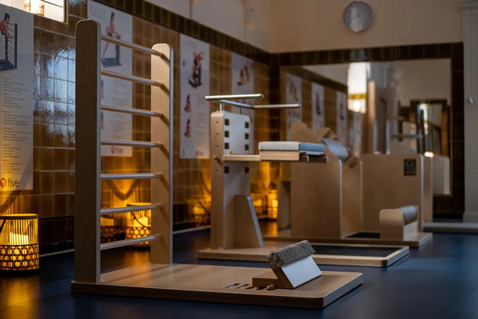
historic-pilates-studio hero
Pilates vybavení v teplém svitu svíček proměňuje historickou kachlíkovou místnost v butikové studio.
alt CS Dřevěný ladder barrel a reformer pro pilates stojí v teple osvětlené místnosti s secesními kachlemi a svíčkovými lucernami.
alt EN Wooden ladder-barrel and reformer-style Pilates equipment stand in a warmly lit room with Art Nouveau tiled walls and candle lanterns.
alt DE Ladder-Barrel und Reformer-ähnliches Pilates-Gerät stehen in einem warm beleuchteten Raum mit Jugendstil-Kacheln und Windlichtern.
1600×1067 · z _Rykovský_foto five konzept/Marianske-lazne-fit-01.jpg
⚠ small 'five' brand logo visible on wall poster/signage
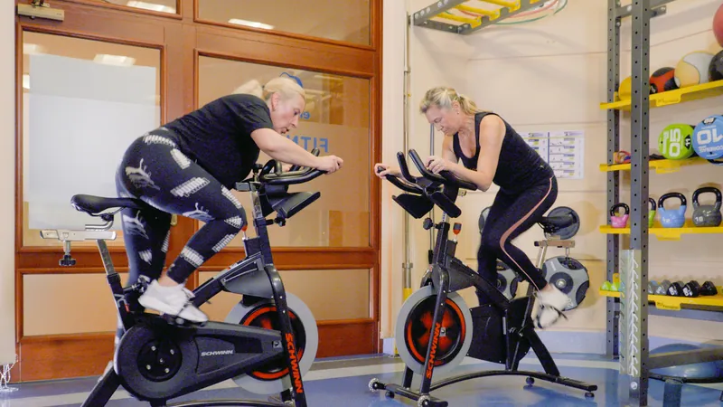
indoor-cycling-duo good
Spinning tváří v tvář udržuje energii ve fitness studiu hotelu na vysoké úrovni.
alt CS Dvě ženy šlapou proti sobě na spinningových kolech v posilovně s nápisem 'FITNESS'.
alt EN Two women pedal indoor spin bikes facing each other in a gym marked 'FITNESS'.
alt DE Zwei Frauen trainieren einander gegenüber auf Indoor-Bikes in einem mit 'FITNESS' beschrifteten Fitnessraum.
1600×900 · z foto Fitness and Nutrition/FitNut-4.jpg
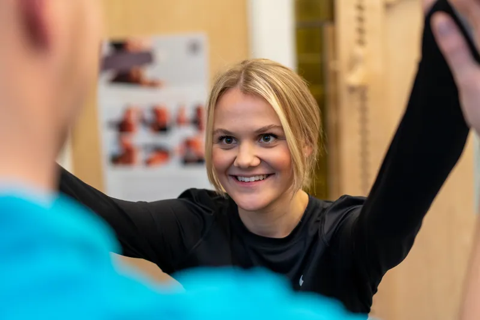
joyful-high-five-crop good
Spontánní okamžik těsně před gestem plácnutí rukou mezi trenérem a klientkou.
alt CS Žena se usmívá vzhůru k částečně viditelné zdvižené ruce, v popředí rozostřená záda trenéra v tyrkysovém tričku.
alt EN Woman smiles up at a partly visible raised hand, trainer's blurred back in a teal shirt in the foreground.
alt DE Frau blickt lächelnd zu einer teilweise sichtbaren erhobenen Hand auf, im Vordergrund unscharf der Rücken des Trainers im türkisfarbenen Shirt.
1600×1067 · z _Rykovský_foto five konzept/Marianske-lazne-fit-25.jpg
⚠ Similar moment to P129, tighter crop
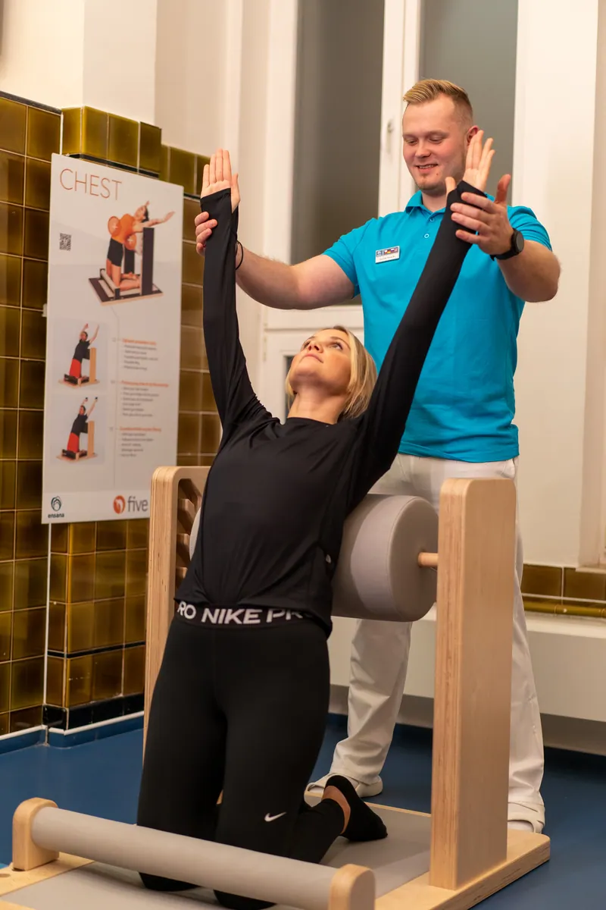
kneeling-chest-stretch good
Přesné vedení trenéra při klečícím protažení otevírajícím hrudník.
alt CS Žena ve sportovním oblečení Nike klečí se zdviženýma rukama při protažení hrudníku, trenér jí drží ruce.
alt EN Woman in Nike sportswear kneels with arms raised in a chest stretch as her trainer holds her hands steady.
alt DE Frau in Nike-Sportkleidung kniet mit erhobenen Armen bei einer Brustdehnung, der Trainer hält ihre Hände.
1067×1600 · z _Rykovský_foto five konzept/Marianske-lazne-fit-11.jpg
⚠ Near-duplicate of P117, same setup
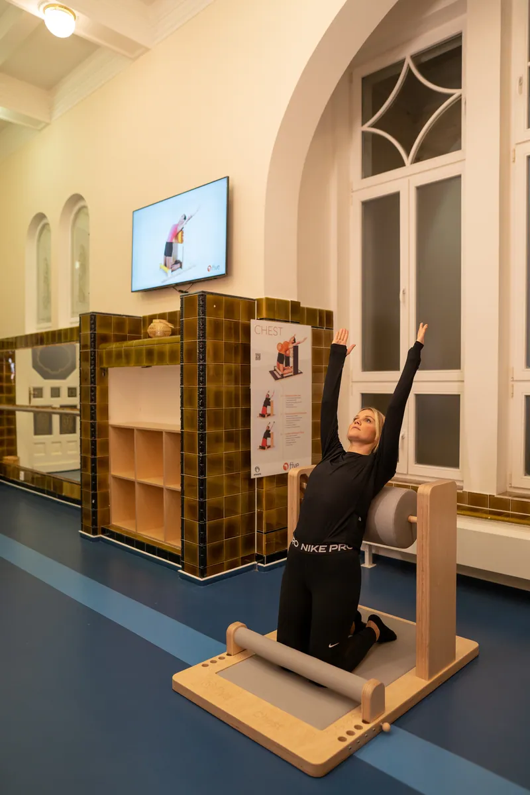
kneeling-stretch-hall good
Fitness koncept se odehrává v jednom z honosných historických sálů lázeňského města.
alt CS Širokoúhlý záběr ženy klečící se zdviženýma rukama na dřevěném přístroji v historickém sále s obloukovými okny a nástěnnou obrazovkou.
alt EN Wide shot of a woman kneeling on a wooden apparatus with arms raised inside a historic hall with arched windows and a wall screen.
alt DE Weitwinkelaufnahme einer Frau, die mit erhobenen Armen auf einem Holzgerät kniet, in einem historischen Saal mit Bogenfenstern und Wandbildschirm.
1067×1600 · z _Rykovský_foto five konzept/Marianske-lazne-fit-13.jpg
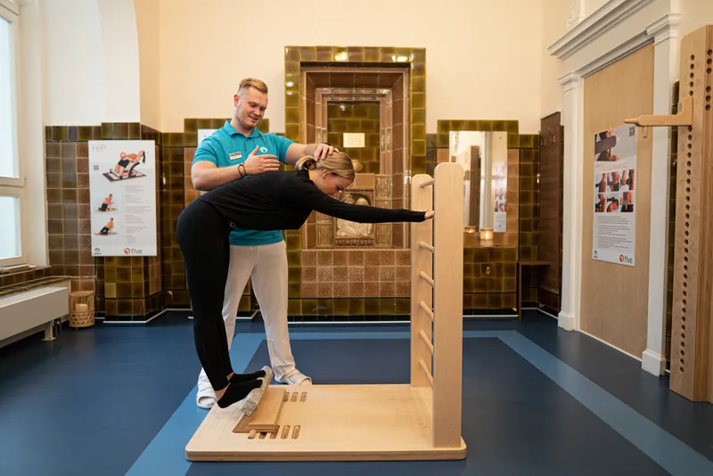
ladder-stretch-session good
V záběru je vidět celý cvičební sál s informačními panely a zrcadly na stěnách.
alt CS Trenér podpírá ženu při protahování vpřed na dřevěném rámu, širší záběr na kachlový cvičební sál.
alt EN Trainer supports a woman stretching forward on a wooden frame, wider view of the tiled exercise hall.
alt DE Trainer stützt eine Frau bei der Vorwärtsdehnung an einem Holzrahmen, weitere Ansicht des gekachelten Übungssaals.
1600×1067 · z _Rykovský_foto five konzept/Marianske-lazne-fit-48.jpg
⚠ Near-duplicate of P144.
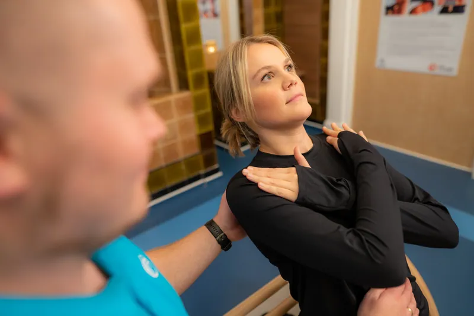
over-shoulder-stretch good
Intimní pohled přes rameno trenéra během vedeného protažení krku.
alt CS Pohled přes rameno rozostřeného trenéra na ostrou ženu provádějící protažení krku v obloženém sále.
alt EN Over-the-shoulder view of a blurred trainer with a woman in focus performing a neck stretch in the tiled hall.
alt DE Blick über die Schulter eines unscharfen Trainers auf eine Frau im Fokus, die im gefliesten Saal eine Nackendehnung ausführt.
1600×1067 · z _Rykovský_foto five konzept/Marianske-lazne-fit-20.jpg
⚠ Same series as P121/P122/P124/P126, artistic OTS crop
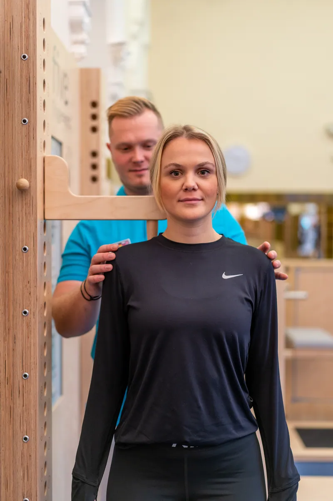
physio-posture-check good
Než trénink začne, trenér zkontroluje držení těla a postavení ramen u žebřin.
alt CS Fyzioterapeut pokládá ruce na ramena mladé ženy a kontroluje její držení těla u žebřin v tréninkové místnosti.
alt EN Physiotherapist places hands on a young woman's shoulders while checking her posture at wooden wall bars in a training studio.
alt DE Physiotherapeut legt die Hände auf die Schultern einer jungen Frau und prüft ihre Haltung an der Sprossenwand im Trainingsraum.
1067×1600 · z _Rykovský_foto five konzept/Marianske-lazne-fit-39.jpg
⚠ Nike logo visible on client's shirt; small badge logo on trainer's shirt. Same session as P140/P141.
pilates-studio-chair-arc good
Denní světlo z vysokých oken se v tomto historickém pilates studiu snoubí se svitem svíček.
alt CS Čalouněná pilates židle a zakřivený barrel stojí u vysokých oken ve stejném kachlíkovém studiu osvětleném svíčkami.
alt EN A padded Pilates chair and curved barrel apparatus stand beside tall windows in the same tiled candlelit studio.
alt DE Ein gepolsterter Pilates-Chair und ein gebogenes Barrel-Gerät stehen neben hohen Fenstern im selben gekachelten, kerzenerleuchteten Studio.
1600×1076 · z _Rykovský_foto five konzept/Marianske-lazne-fit-02.jpg
⚠ small 'five' brand logo visible on wall poster/signage; same studio and lighting setup as P109 with different equipment in frame
posture-assessment-closeup good
Pozorné vyšetření: každá lekce začíná pečlivým pohledem na držení těla.
alt CS Fyzioterapeut drží ramena mladé ženy při kontrole postoje u žebřin, detailní záběr na obličej.
alt EN Physiotherapist holds a young woman's shoulders during a posture check at wooden wall bars, close framing on her face.
alt DE Physiotherapeut hält die Schultern einer jungen Frau bei der Haltungskontrolle an der Sprossenwand, Nahaufnahme des Gesichts.
1600×1067 · z _Rykovský_foto five konzept/Marianske-lazne-fit-42.jpg
⚠ Near-duplicate of P139 and P140 - same session, same subjects.
seated-fascia-stretch good
Další záběr cvičení na fascie, součást konceptu aktivní regenerace studia.
alt CS Žena se opírá na dřevěné lavici fasciálního stimulátoru s rukama opřenýma po obou stranách, v pozadí obložená stěna studia.
alt EN Woman leaning back on a wooden fascia-stimulator bench with hands braced on either side, tiled studio wall behind.
alt DE Frau lehnt sich auf einer hölzernen Faszienstimulator-Bank zurück, Hände beidseitig abgestützt, im Hintergrund gefliester Studiowand.
1600×1067 · z _Rykovský_foto five konzept/Marianske-lazne-fit-08.jpg
⚠ Same apparatus and pose family as P113, different crop
senior-side-stretch good
Starší hostka pracuje na flexibilitě a pohyblivosti páteře pomocí dřevěného cvičebního rámu.
alt CS Starší žena v květovaném tričku se protahuje do strany na dřevěném cvičebním rámu se zdviženou paží.
alt EN Senior woman in a floral top stretches sideways on a wooden gymnastics frame, arm raised overhead.
alt DE Ältere Frau in geblümter Bluse dehnt sich seitlich an einem hölzernen Turngerät, Arm über dem Kopf gehoben.
1114×1600 · z _Rykovský_foto five konzept/Marianske-lazne-fit-49.jpg
⚠ Near-duplicate of P147 and P148, same pose and session.
senior-stretch-mirror good
V pozadí zrcadla odhalují zbytek skupiny, jak pokračuje ve stejném protahovacím cviku.
alt CS Starší žena se protahuje do strany na dřevěném cvičebním rámu, v zrcadle za ní jsou vidět další dva účastníci.
alt EN Senior woman stretches sideways on a wooden exercise frame, with two more participants reflected in a mirror behind.
alt DE Ältere Frau dehnt sich seitlich an einem hölzernen Übungsrahmen, im Spiegel dahinter sind zwei weitere Teilnehmer zu sehen.
1094×1600 · z _Rykovský_foto five konzept/Marianske-lazne-fit-51.jpg
⚠ Near-duplicate of P146 and P147.
senior-stretch-trainer good
Trenér zůstává nablízku, zatímco hosté společně provádí sérii protahovacích cviků.
alt CS Starší žena se protahuje do strany na dřevěném rámu, poblíž na ni dohlíží trenér v tyrkysovém tričku.
alt EN Senior woman stretches sideways on the wooden frame while a trainer in teal looks on nearby.
alt DE Ältere Frau dehnt sich seitlich am Holzrahmen, während ein Trainer im türkisfarbenen Shirt in der Nähe zusieht.
1600×1067 · z _Rykovský_foto five konzept/Marianske-lazne-fit-52.jpg
⚠ Same setting/session as P146-P148.
senior-stretch-wide good
Širší záběr ukazuje celé dřevěné nářadí a historické kachlové stěny místnosti.
alt CS Starší žena se protahuje do strany na dřevěném cvičebním rámu, širší záběr na kachlovou tréninkovou místnost.
alt EN Senior woman stretches sideways on a wooden exercise frame, wider shot showing the tiled training room.
alt DE Ältere Frau dehnt sich seitlich an einem hölzernen Übungsrahmen, weiterer Ausschnitt des gekachelten Trainingsraums.
1600×1067 · z _Rykovský_foto five konzept/Marianske-lazne-fit-50.jpg
⚠ Near-duplicate of P146 and P148.
smiling-fitness-portrait good
Uvolněný okamžik během tréninku v rámu původních secesních obkladů studia.
alt CS Žena ve sportovním oblečení se usmívá a opírá o dřevěný cvičební přístroj ve fitness studiu.
alt EN Woman in black sportswear smiling while resting on a wooden training apparatus in a spa-town fitness studio.
alt DE Frau in schwarzer Sportkleidung lächelt, während sie sich auf einem hölzernen Trainingsgerät im Fitnessstudio abstützt.
1067×1600 · z _Rykovský_foto five konzept/Marianske-lazne-fit-04.jpg
⚠ Near-duplicate of P111, same setup and outfit
socks-on-roller good
Klidný detail z tréninku fascií – chodidla v ponožkách na polstrovaném válečku přístroje.
alt CS Detail chodidel v černých ponožkách opřených o polstrovaný váleček dřevěného cvičebního přístroje.
alt EN Close-up of feet in black socks resting on a padded roller of a wooden fitness apparatus.
alt DE Nahaufnahme von Füßen in schwarzen Socken auf einer gepolsterten Rolle eines hölzernen Trainingsgeräts.
1600×1067 · z _Rykovský_foto five konzept/Marianske-lazne-fit-07.jpg
solo-overhead-stretch good
Sólové protažení u nástěnného přístroje, v pozadí nenápadně logo five.
alt CS Žena sama u dřevěného nástěnného přístroje se zdviženýma pažemi nad hlavou, na dřevěném panelu viditelné malé logo five.
alt EN Woman alone at the wooden wall apparatus, both arms raised overhead, small five logo visible on the wood panel.
alt DE Frau allein am hölzernen Wandgerät, beide Arme über dem Kopf erhoben, kleines five-Logo auf der Holzplatte sichtbar.
1600×1067 · z _Rykovský_foto five konzept/Marianske-lazne-fit-35.jpg
⚠ five studio logo visible on wooden panel
standing-arm-reach good
Cvičení na rovnováhu vestoje, vedené trenérem na nástěnném přístroji studia.
alt CS Trenér vede ženu stojící u dřevěného cvičebního přístroje s jednou paží nataženou, v pozadí historický sál s obloukovým oknem.
alt EN Trainer guides a woman standing at a wooden apparatus with one arm reaching out, historic hall with arched window behind.
alt DE Trainer leitet eine Frau an einem hölzernen Trainingsgerät an, ein Arm ausgestreckt, im Hintergrund historischer Saal mit Bogenfenster.
1067×1600 · z _Rykovský_foto five konzept/Marianske-lazne-fit-28.jpg
⚠ Part of a near-identical four-frame sequence with P132/P133/P134
stretch-in-tiled-alcove hero
Obložený oblouk rámuje vedené protažení krku a ramen v historickém sále.
alt CS Trenér vede protažení krku ženy na dřevěné plošině ve zdobeném obloženém oblouku historického sálu.
alt EN Trainer guides a woman's neck stretch on a wooden platform inside an ornate tiled archway of the historic hall.
alt DE Trainer leitet eine Nackendehnung einer Frau auf einer Holzplattform in einem verzierten gefliesten Torbogen des historischen Saals an.
1163×1600 · z _Rykovský_foto five konzept/Marianske-lazne-fit-19.jpg
⚠ Same series as P121/P122/P125/P126
trainer-assisted-stretch good
Individuální protahovací lekce v historickém cvičebním sále s výraznými zelenými kachlovými obklady.
alt CS Trenér přidržuje ženu předklánějící se na dřevěném cvičebním rámu v místnosti se zelenou kachlovou stěnou a obloukovými okny.
alt EN Trainer braces a woman bent forward over a wooden training frame in a room with green tiled wall and arched windows.
alt DE Trainer stützt eine nach vorne gebeugte Frau an einem hölzernen Trainingsgerät in einem Raum mit grüner Kachelwand und Bogenfenstern.
1600×1067 · z _Rykovský_foto five konzept/Marianske-lazne-fit-47.jpg
⚠ Near-duplicate of P145, same session as P143.
trainer-client-smile hero
Upřímný úsměv mezi trenérem a klientkou po sezení vedeného protahování.
alt CS Trenér a žena se na sebe vřele usmívají, jeho ruce na jejích ramenou, po vedeném protažení v obloženém sále.
alt EN Trainer and woman both smiling warmly, his hands on her shoulders, after a guided stretch in the tiled hall.
alt DE Trainer und Frau lächeln sich herzlich an, seine Hände auf ihren Schultern, nach einer angeleiteten Dehnübung im gefliesten Saal.
1600×1067 · z _Rykovský_foto five konzept/Marianske-lazne-fit-21.jpg
⚠ Same series as P121/P122/P124/P125
trainer-group-session good
Osobní trenér vede ve fitness studiu funkční trénink v malé skupině.
alt CS Trenér předvádí cvik s odporovou gumou na žebřinách, účastníci sledují a cvičí s ním.
alt EN A trainer demonstrates a resistance-band exercise on a wall ladder frame as gym members watch and follow.
alt DE Ein Trainer zeigt an einer Sprossenwand eine Übung mit Widerstandsband, während Teilnehmer zusehen und mitmachen.
1600×900 · z foto Fitness and Nutrition/FitNut-6.jpg
trainer-high-five hero
Okamžik plácnutí rukou shrnuje energickou atmosféru tréninkových lekcí ve studiu.
alt CS Trenér a žena si s úsměvem plácnou rukama před zdobenou obloženou stěnou s viditelným malým logem five.
alt EN Trainer and woman share a high-five, both smiling, in front of an ornate tiled wall with a small five logo visible.
alt DE Trainer und Frau geben sich lächelnd ein High-Five vor einer verzierten gefliesten Wand mit sichtbarem kleinen five-Logo.
1600×1067 · z _Rykovský_foto five konzept/Marianske-lazne-fit-26.jpg
⚠ five studio logo faintly visible on wall poster; similar moment to P128
trainer-neck-alignment good
Detailnější pohled na vyšetření postoje se zaměřením na krk a ramena.
alt CS Fyzioterapeut zvedá ruku u hlavy mladé ženy při posuzování držení krku a ramen u žebřin.
alt EN Physiotherapist raises a hand near a young woman's head while assessing neck and shoulder posture at wall bars.
alt DE Physiotherapeut hebt die Hand nahe dem Kopf einer jungen Frau, um Nacken- und Schulterhaltung an der Sprossenwand zu beurteilen.
1600×1067 · z _Rykovský_foto five konzept/Marianske-lazne-fit-40.jpg
⚠ Near-duplicate of P139 and P141 - same session, same subjects.
trainer-shoulder-guidance good
Trenér vede protažení ramen a krku vsedě ve zdobené obložené nice studia.
alt CS Trenér v polo tričku s logem Ensana stojí za ženou s rukama na jejích ramenou a vede protažení vsedě před zdobenou obloženou nikou.
alt EN Trainer with an Ensana-branded polo shirt stands behind a woman, hands on her shoulders, guiding a seated stretch by an ornate tiled niche.
alt DE Trainer in Poloshirt mit Ensana-Logo steht hinter einer Frau, Hände auf ihren Schultern, und leitet eine sitzende Dehnübung vor einer verzierten gefliesten Nische an.
1600×1067 · z _Rykovský_foto five konzept/Marianske-lazne-fit-16.jpg
⚠ Ensana logo visible on trainer's shirt; part of a stretch series with P122/P124/P125/P126
trainer-side-stretch hero
Osobní trenér vede boční protažení, jedno z typických mobilizačních cvičení studia.
alt CS Trenér v tyrkysovém polo tričku pomáhá usmívající se ženě s bočním protažením na dřevěném přístroji, nad nimi hodiny.
alt EN Trainer in a teal polo assists a smiling woman in a side stretch on a wooden apparatus, wall clock above.
alt DE Trainer im türkisfarbenen Poloshirt unterstützt eine lächelnde Frau bei einer seitlichen Dehnung an einem Holzgerät, darüber eine Wanduhr.
1067×1600 · z _Rykovský_foto five konzept/Marianske-lazne-fit-09.jpg
wide-shot-stretch-hall good
Další pohled na stejné protažení na pozadí původní architektury sálu.
alt CS Podélný záběr ženy protahující se na dřevěném přístroji v historickém obloženém sále s obloukovými okny.
alt EN Landscape view of a woman stretching on a wooden apparatus inside a historic tiled hall with arched windows.
alt DE Querformataufnahme einer Frau bei einer Dehnübung auf einem Holzgerät in einem historischen gefliesten Saal mit Bogenfenstern.
1600×1048 · z _Rykovský_foto five konzept/Marianske-lazne-fit-15.jpg
⚠ Near-duplicate of P119, alternate orientation/crop of the same shot
wide-standing-stretch good
Širší pohled na cvičení na rovnováhu uprostřed historického prostředí studia.
alt CS Trenér a žena u dřevěného nástěnného přístroje, širší pohled na cvičení na rovnováhu v historickém sále.
alt EN Trainer and woman at a wooden wall apparatus, wider view of the balance exercise in the historic hall.
alt DE Trainer und Frau an einem hölzernen Wandgerät, weiterer Blick auf die Balanceübung im historischen Saal.
1600×1067 · z _Rykovský_foto five konzept/Marianske-lazne-fit-31.jpg
⚠ Near-duplicate of P131/P132
Hotelové interiéry 12
blue-barstools-closeup good
Vkusné detaily u hotelového baru, připravené na večerní drink.
alt CS Detail modře čalouněných barových stoliček u hotelového baru, v pozadí rozostřená šachovnicová podlaha a zrcadlová stěna.
alt EN Close-up of blue upholstered barstools at a hotel bar counter, checkerboard floor and mirrored wall in soft focus behind.
alt DE Nahaufnahme blau gepolsterter Barhocker an einer Hoteltheke, Schachbrettboden und Spiegelwand im Hintergrund unscharf.
1600×1067 · z marienbad-13.jpg
⚠ A blurred figure is faintly visible in the background reflection, not identifiable.
grand-hotel-facade hero
Honosná lázeňská budova se tyčí nad klidnou ulicí v Mariánských Lázních za jasného letního odpoledne.
alt CS Krémově bílá novobarokní lázeňská budova se strmou mansardovou střechou a vikýři pod jasně modrou oblohou.
alt EN Cream and white neo-Baroque spa hotel with a steep mansard roof and dormers under a clear blue sky.
alt DE Cremeweißes neobarockes Kurhotel mit steilem Mansarddach und Gauben unter klarem blauem Himmel.
1600×1067 · z marienbad-15.jpg
grand-lobby-archway hero
Zlacené štukové oblouky vedou hosty ve vstupní hale tohoto grandhotelu k recepci.
alt CS Zdobený bílo-zlatý oblouk rámující hotelovou recepci v pozadí, s vzorovaným kobercem.
alt EN Ornate white and gold archway framing a hotel reception desk beyond, with a patterned carpet floor.
alt DE Verzierter weiß-goldener Torbogen, der den dahinterliegenden Hotelempfang rahmt, mit gemustertem Teppichboden.
1600×1076 · z marienbad-24.jpg
grandhotel-pacifik-exterior hero
Zdobená žlutá fasáda a sochy na střeše Grandhotelu Pacifik zachycují poledne slunce.
alt CS Žlutá novobarokní hotelová budova s nápisem 'Grandhotel Pacifik' a sochami na střeše pod jasnou oblohou.
alt EN Yellow neo-Baroque hotel building with 'Grandhotel Pacifik' signage and rooftop statues under a clear sky.
alt DE Gelbes neobarockes Hotelgebäude mit dem Schriftzug 'Grandhotel Pacifik' und Dachfiguren unter klarem Himmel.
1600×1066 · z marienbad-5.jpg
⚠ Named hotel signage ('Grandhotel Pacifik') visible on the building.
grandhotel-pacifik-rooftop good
Okřídlené bronzové postavy a věžní hodiny korunují Grandhotel Pacifik nad korunami stromů.
alt CS Detail střechy Grandhotelu Pacifik s okřídlenými sochami, hodinami a nápisem 'Grandhotel Pacifik'.
alt EN Close-up of the Grandhotel Pacifik's rooftop with winged statues, a clock and 'Grandhotel Pacifik' signage.
alt DE Nahaufnahme des Daches des Grandhotel Pacifik mit geflügelten Statuen, einer Uhr und dem Schriftzug 'Grandhotel Pacifik'.
1600×1066 · z marienbad-6.jpg
⚠ Named hotel signage visible; near-duplicate composition of P075 (same rooftop, same angle).
hotel-lobby-bar good
Klidný lobby bar s klavírem zve hosty k odpočinku po dni plném procedur.
alt CS Hotelový lobby bar s pruhovanými křesly, kulatými stolky, klavírem a televizí na zdi.
alt EN Hotel lobby bar with striped armchairs, round tables, a grand piano and a wall-mounted television.
alt DE Hotel-Lobbybar mit gestreiften Sesseln, runden Tischen, einem Flügel und einem wandmontierten Fernseher.
1600×1046 · z marienbad-23.jpg
⚠ Furnishings and TV look dated; useful only for supporting gallery content, not a hero shot.
hotel-lobby-mezzanine good
Kované zábradlí a lustry rámují pohled dolů do haly grandhotelu.
alt CS Galerie hotelové haly s kovaným zábradlím, lustry a bystami na podstavcích.
alt EN Hotel lobby mezzanine with wrought-iron balustrade, chandeliers and sculpted busts on pedestals.
alt DE Hotellobby-Galerie mit schmiedeeisernem Geländer, Kronleuchtern und Büsten auf Sockeln.
1600×1321 · z marienbad-9.jpg
hotel-lounge-bar-seating weakneveřejné
Klidný kout na kávu nebo drink mezi lázeňskými procedurami.
alt CS Hotelový salonek s křesly s květinovým čalouněním, kulatými stolky a malým barovým pultem se stoličkami, velká okna s průsvitnými závěsy.
alt EN Hotel lounge with floral-upholstered armchairs, round tables, and a small bar counter with stools, large windows with sheer curtains.
alt DE Hotellounge mit geblümt gepolsterten Sesseln, runden Tischen und einer kleinen Bartheke mit Hockern, große Fenster mit transparenten Vorhängen.
1600×1089 · z marienbad-11.jpg
⚠ Dated 1990s/2000s furnishings and styling.
hotel-reception-lobby hero
Šachovnicový mramor a křišťálové světlo naladí hosty hned při příchodu.
alt CS Elegantní hotelová recepce se šachovnicovou mramorovou podlahou, křišťálovým lustrem, zlaceným recepčním pultem a modře čalouněným sezením.
alt EN Elegant hotel reception lobby with a checkerboard marble floor, crystal chandelier, gilded reception desk, and blue upholstered seating.
alt DE Elegante Hotellobby mit Schachbrettmuster-Marmorboden, Kristallleuchter, vergoldetem Empfangstresen und blau gepolsterten Sitzmöbeln.
1600×1068 · z marienbad-12.jpg
hotel-reception-lobby-02 good
Jemně osvětlená hala vede hosty pod zaoblenými sloupy k recepčnímu pultu.
alt CS Hotelová hala se sloupy, dřevěnou recepcí s nápisem 'RECEPCE' a vínově červeným kobercem.
alt EN Hotel lobby with columns, wooden reception desk labeled 'RECEPCE', and burgundy carpet.
alt DE Hotellobby mit Säulen, hölzernem Empfangstresen mit der Aufschrift 'RECEPCE' und bordeauxrotem Teppich.
1600×1011 · z marienbad-22.jpg
⚠ Interior styling reads somewhat dated (carpet pattern, lighting).
pacifik-rooftop-detail good
Okřídlené bronzové postavy shlížejí ze střechy Grandhotelu Pacifik na okolní domy.
alt CS Detail střechy Grandhotelu Pacifik s okřídlenými sochami, hodinami a nápisem 'Grandhotel Pacifik'.
alt EN Close-up of the Grandhotel Pacifik's rooftop with winged statues, clock and 'Grandhotel Pacifik' signage.
alt DE Nahaufnahme des Daches des Grandhotel Pacifik mit geflügelten Statuen, Uhr und dem Schriftzug 'Grandhotel Pacifik'.
1600×1066 · z mb_29_B.jpg
⚠ Same subject, framing and resolution as P070 — near-identical duplicate; keep only one in final selects.
robed-guests-historic-hall good
Hosté odpočívají v županech mezi zlacenými interiéry historického lázeňského hotelu v Mariánských Lázních.
alt CS Žena a muž v bílých županech odpočívají na lavicích v honosném historickém interiéru hotelu se svícemi.
alt EN A woman and man in white spa robes relax on benches in an ornate historic hotel interior with candles.
alt DE Eine Frau und ein Mann in weißen Bademänteln entspannen auf Bänken in einem prunkvollen historischen Hotelinterieur mit Kerzen.
1600×1067 · z 02_kabina.jpg
⚠ Dated styling
Lifestyle 10
arms-raised-celebration good
Radostná póza vystihuje energii fitness konceptu five.
alt CS Detailní portrét usmívající se ženy se široce rozevřenýma rukama, v rozostřeném pozadí dveře s logem studia five.
alt EN Close portrait of a smiling woman with arms raised wide, blurred doorway with the five studio logo behind her.
alt DE Nahporträt einer lächelnden Frau mit weit erhobenen Armen, im unscharfen Hintergrund die Tür mit dem five-Studio-Logo.
1600×1067 · z _Rykovský_foto five konzept/Marianske-lazne-fit-23.jpg
⚠ five studio logo clearly visible on background signage
close-up-neck-stretch good
Soustředěný okamžik během protažení, zachycený v detailním portrétu.
alt CS Detailní portrét ženy se zkříženýma rukama na hrudi a zdviženou bradou během protažení na rozostřeném obloženém pozadí.
alt EN Close portrait of a woman with arms crossed at her chest, chin lifted, mid-stretch against a blurred tiled backdrop.
alt DE Nahporträt einer Frau mit vor der Brust gekreuzten Armen und erhobenem Kinn während einer Dehnübung vor unscharfem gefliesten Hintergrund.
1600×1067 · z _Rykovský_foto five konzept/Marianske-lazne-fit-18.jpg
⚠ Tight portrait crop from the same stretch series as P121/P122/P124-126
couple-ballroom-dance weakneveřejné
Tichý, romantický okamžik se odehrává pod lustry v jemně osvětleném sále.
alt CS Pár se objímá v prosluněném, zamlženém sále s lustry, muž líbá ženě ruku.
alt EN Couple embracing closely in a hazy, sunlit ballroom with chandeliers, man kissing woman's hand.
alt DE Ein Paar umarmt sich eng in einem sonnendurchfluteten Ballsaal mit Kronleuchtern, der Mann küsst die Hand der Frau.
1600×900 · z romantic-days.jpg
⚠ Staged, hazy generic stock photograph; not tied to any identifiable Marienbad interior.
family-sunset-field weakneveřejné
Rodina si užívá hravý okamžik ve zlatém světle, ruce spojené proti zapadajícímu slunci.
alt CS Silueta dvou rodičů houpajících dítě za ruce na travnaté louce při západu slunce.
alt EN Silhouette of two parents swinging a child by the hands in a grassy field at sunset.
alt DE Silhouette zweier Eltern, die ein Kind an den Händen über eine Wiese bei Sonnenuntergang schwingen.
1500×1000 · z rodinná dovolená.jpg
⚠ Generic backlit stock photograph, no connection to a specific location; low resolution (1500x1000).
profile-portrait-studio good
Tichý profilový portrét zachycuje soustředěný klid mezi cviky.
alt CS Detailní portrét ženy z profilu ve sportovním oblečení, v rozostřeném pozadí obklad se cvičebními plakáty.
alt EN Close side-profile portrait of a woman in black sportswear, blurred tiled wall with instructional posters behind her.
alt DE Nahes Seitenprofilporträt einer Frau in schwarzer Sportkleidung, im unscharfen Hintergrund gefliese Wand mit Übungsplakaten.
1600×1241 · z _Rykovský_foto five konzept/Marianske-lazne-fit-36.jpg
purple-relaxation-lounge hero
Moderní relaxační lounge zalitá fialovým světlem nabízí soudobý protipól k historickým mariánskolázeňským lázním.
alt CS Žena v županu sedí na vyhřívaném lehátku v atmosférické fialově osvětlené relaxační lounge s modrým světelným pruhem.
alt EN A woman in a robe sits on a heated lounger in a moody, purple-lit relaxation lounge with a glowing blue light strip.
alt DE Eine Frau im Bademantel sitzt auf einer beheizten Liege in einer stimmungsvoll violett beleuchteten Ruhelounge mit blauem Lichtstreifen.
1080×1080 · z 1106.png
⚠ Faint text/logo visible in mirror reflection, may need cropping before use
towel-back-grand-hall hero
Odhalená ramena a zlacené stěny zachycují tichý luxus historických mariánskolázeňských lázeňských síní.
alt CS Žena zezadu, zahalená do bílého ručníku, sedí na mramorové římse ve velkolepém zlatém sále.
alt EN A woman seen from behind, wrapped in a white towel, sits on a marble ledge in a grand gilded hall.
alt DE Eine Frau von hinten, in ein weißes Handtuch gehüllt, sitzt auf einer Marmorbank in einem prächtigen goldverzierten Saal.
1069×1600 · z 19_kabina.jpg
towel-portrait-tiled-wall good
Čerstvě po koupeli se host zastaví na portrét před klasickou mariánskolázeňskou obkladovou kulisou.
alt CS Blonďatá žena zabalená do bílého ručníku stojí s úsměvem před vzorovanou obkladovou stěnou.
alt EN A blonde woman wrapped in a white towel stands smiling against a patterned tiled wall.
alt DE Eine blonde Frau, in ein weißes Handtuch gehüllt, steht lächelnd vor einer gemusterten Fliesenwand.
1067×1600 · z 12_mineralni_koupele.jpg
woman-dandelion-field weakneveřejné
Jemný nádech rozptýlí semínka pampelišky, malá metafora lehkého, volného dýchání.
alt CS Mladá žena s kudrnatými vlasy fouká semínka z pampelišky na slunném poli.
alt EN Young woman with curly hair blowing seeds off a dandelion in a sunlit field.
alt DE Junge Frau mit lockigem Haar pustet Samen von einer Pusteblume auf einem sonnigen Feld.
1280×853 · z respiratory-recovery .jpg
⚠ Generic stock photograph, no connection to a specific spa or treatment; low resolution (1280x853).
woman-emerging-thermal-pool good
Osvěžující ponor do termální vody jako součást každodenní wellness rutiny.
alt CS Žena v bílých plavkách se vynořuje z tyrkysového termálního bazénu, z pozdvižených rukou jí stéká voda, v pozadí mozaikový okraj bazénu.
alt EN Woman in a white swimsuit emerging from a turquoise thermal pool, water streaming from her raised hands, mosaic pool edge visible.
alt DE Frau im weißen Badeanzug taucht aus einem türkisfarbenen Thermalbecken auf, Wasser läuft von ihren erhobenen Händen, Mosaikbeckenrand im Hintergrund.
1280×829 · z immunity-booster.jpg
Minerální koupele 75
antique-spa-journal-candle hero
Historický lázeňský deník Marienbad připomíná více než stoletou tradici zdejších lázní.
alt CS Hořící svíčka vedle antické kožené knihy s názvem „Marienbad Bade-Journal“ položené na okraji měděné minerální vany.
alt EN Lit candle beside an antique leather-bound book titled 'Marienbad Bade-Journal' resting on the edge of a copper mineral bathtub.
alt DE Brennende Kerze neben einem antiken Lederbuch mit dem Titel „Marienbad Bade-Journal“ auf dem Rand einer kupfernen Mineralwanne.
1071×1600 · z 29_mineralni_koupele.jpg
⚠ Visible antique prop text reads 'Marienbad Bade-Journal'.
bald-man-stained-glass-bath good
Teplé světlo a vitráž tvoří kulisu pro klasickou minerální koupel pro muže.
alt CS Terapeutka pečuje o muže odpočívajícího v minerální koupeli pod vitrážovým oknem.
alt EN A therapist attends to a man reclining in a mineral bath beneath a stained-glass window.
alt DE Eine Therapeutin betreut einen Mann, der in einem Mineralbad unter einem Buntglasfenster liegt.
1321×1600 · z 07_mineralni_koupele.jpg
⚠ Lower resolution than most in this set
baroque-hall-wide-angle hero
Vyřezávaný dub a malované klenby připomínají zlatou éru mariánskolázeňských lázeňských síní.
alt CS Širokoúhlý pohled na honosnou historickou lázeňskou síň s vyřezávaným dřevěným nábytkem a malovaným klenutým stropem, v pozadí žena v županu.
alt EN Wide-angle view of an ornate historic bath hall with carved wooden furniture and a painted vaulted ceiling, a robed woman seated in the background.
alt DE Weitwinkelansicht einer prunkvollen historischen Badehalle mit geschnitzten Holzmöbeln und bemalter Gewölbedecke, im Hintergrund eine Frau im Bademantel.
1600×1071 · z 13_kabina.jpg
blonde-champagne-tub good
Společný zážitek z minerální koupele se šampaňským po ruce, v jedné z historických mariánskolázeňských lázeňských místností.
alt CS Blonďatá žena relaxuje ve starobylé vaně, vedle stolek se šampaňským, v pozadí je vidět další koupající se host.
alt EN A blonde woman relaxes in a vintage bath tub with champagne set on a nearby table, another bather visible behind.
alt DE Eine blonde Frau entspannt in einer historischen Badewanne, daneben ein Tisch mit Champagner, im Hintergrund ein weiterer Badegast.
1600×1067 · z 16_mineralni_koupele.jpg
blonde-white-tub-jug good
Prostá elegance: minerální koupel orámovaná vzorovanými obklady a ručně malovaným džbánem.
alt CS Blonďatá žena relaxuje v bílé vaně na minerální koupel pod malým stolkem s dekorativním džbánem.
alt EN A blonde woman relaxes in a white mineral bath tub beneath a small table holding a decorative jug.
alt DE Eine blonde Frau entspannt in einer weißen Mineralbadewanne unter einem kleinen Tisch mit einem dekorativen Krug.
1600×1067 · z 17_mineralni_koupele.jpg
brass-valve-murky-bath weakneveřejné
Za historickou technikou dodnes hosté podstupují minerální kúru stejně jako generace před nimi.
alt CS Velký mosazný ventil v popředí, v pozadí žena odpočívající v kalné minerální vodě v zeleně obloženém koupelně.
alt EN Large brass valve in the foreground with a woman resting in cloudy mineral water in a green-tiled bathroom behind it.
alt DE Großes Messingventil im Vordergrund, dahinter eine Frau in trübem Mineralwasser in einem grün gefliesten Baderaum.
1065×1600 · z 31_mineralni_koupele.jpg
⚠ Dim, murky water color, soft focus, dated overall look.
bronze-fountain-mask good
Bronzová maska chrliče vede minerální vodu do historického bazénu s tichou elegancí.
alt CS Bronzová maska chrliče, ze které proudí minerální voda do obloženého bazénu vedle mramorové patky sloupu.
alt EN Bronze mask spout pouring mineral water into a tiled bath pool beside a marble column base.
alt DE Bronzene Maskentülle, aus der Mineralwasser in ein gekacheltes Badebecken neben einem Marmorsäulensockel fließt.
1600×1067 · z marienbad-2.jpg
candlelit-marble-tub hero
Svíčky a teplá minerální voda vytvářejí intimní rituál v historické koupelně.
alt CS Blonďatá žena relaxuje v tmavé mramorové vaně obklopené hořícími svíčkami a vzorovanou tapetou.
alt EN A blonde woman relaxes in a dark marble bath tub flanked by lit candles and patterned wallpaper.
alt DE Eine blonde Frau entspannt in einer dunklen Marmorbadewanne, flankiert von brennenden Kerzen und gemusterter Tapete.
1600×1042 · z 18_kabina.jpg
champagne-tub-relax hero
Šampaňské v chladicím kbelíku mění minerální koupel v hýčkající rituál pro dva.
alt CS Muž odpočívá v bílé vaně na minerální koupel vedle stolku s šampaňským a skleničkami v historické obkladové místnosti.
alt EN A man relaxes in a white mineral bath tub beside a table set with champagne and glasses in a tiled historic room.
alt DE Ein Mann entspannt in einer weißen Mineralbadewanne neben einem Tisch mit Champagner und Gläsern in einem historischen Fliesenraum.
1600×1067 · z 14_mineralni_koupele.jpg
co2-apparatus-tub good
Historické mosazné přístroje dodnes rámují zážitek z minerální koupele v mariánskolázeňských lázeňských domech.
alt CS Muž odpočívá ve starobylé vaně vedle mosazného přístroje pro minerální koupel v obkladové historické koupelně.
alt EN A man rests in a vintage tub beside a brass mineral bath apparatus in a tiled historic bathing room.
alt DE Ein Mann ruht in einer historischen Wanne neben einem Messing-Apparat für das Mineralbad in einem gefliesten historischen Baderaum.
1600×1057 · z 15_mineralni_koupele.jpg
copper-faucet-detail good
Vyleštěná měděná armatura, drobný detail připomínající generace lázeňského řemesla.
alt CS Detail antické měděné vodovodní baterie s ruční sprchou, v pozadí rozostřená vana a ručník.
alt EN Close-up of an antique copper bathtub faucet with a handheld shower head, tub and towel softly blurred behind it.
alt DE Nahaufnahme einer antiken Kupfer-Wannenarmatur mit Handbrause, dahinter unscharf Wanne und Handtuch.
1600×1071 · z 28_mineralni_koupele.jpg
couple-champagne-toast-bath hero
Přípitek mezi procedurami – lázeňský den se mění ve společný požitek pro dva.
alt CS Muž v minerální vaně přiťukává sklenkou šampaňského se ženou v županu sedící vedle něj, teplé sépiové tóny.
alt EN Man in a mineral bathtub raises a champagne glass to a woman in a bathrobe seated beside him, warm sepia tones.
alt DE Mann in einer Mineralwanne stößt mit einer Frau im Bademantel an, die neben ihm sitzt, warme Sepiatöne.
1600×1067 · z 22_mineralni_koupele.jpg
empty-hydrotherapy-tub-room weakneveřejné
Místnost s lázeňskou vanou, prázdná mezi jednotlivými procedurami.
alt CS Prázdná místnost s lázeňskou vanou, skříní, oranžovým pultem a modrými stupínky, bez osob.
alt EN Empty spa tub room with a wardrobe cabinet, orange counter and blue accent steps, no people present.
alt DE Leerer Kurbaderaum mit Kleiderschrank, orangefarbener Ablage und blauen Stufen, ohne Personen.
1600×1067 · z Leceni klasicke procedury/Underwater massage (2).jpg
⚠ Establishing shot within the underwater-massage set (P177-P186).
empty-soaking-tub weakneveřejné
Soukromá vana v jedné z léčebných koupelen lázeňského domu.
alt CS Prázdná bílá oválná vana v lázeňské koupelně se žaluziemi v broskvové barvě a pokojovou rostlinou.
alt EN Empty white oval soaking tub in a spa bathroom with peach striped blinds and a potted plant.
alt DE Leere weiße ovale Wanne in einem Kurbadezimmer mit pfirsichfarbenen Lamellenvorhängen und einer Topfpflanze.
1600×1060 · z Leceni klasicke procedury/Neapol Spa department (1).JPG
⚠ Dated interior styling, no visible branding confirming the Neapol name.
fresco-hall-portrait hero
Freskami zdobené stropy a mramorové sloupy mění obyčejnou koupel v okamžik naprosté velkoleposti.
alt CS Žena zabalená do ručníku sedí u mramorové vany ve velkolepém sále s freskami, malovaným stropem a mramorovými sloupy.
alt EN A woman wrapped in a towel sits by a marble tub in a grand frescoed hall with painted ceilings and marble columns.
alt DE Eine in ein Handtuch gehüllte Frau sitzt an einer Marmorwanne in einem prächtigen freskengeschmückten Saal mit bemalter Decke und Marmorsäulen.
1197×1600 · z 14_kabina.jpg
gold-hall-marble-tub hero
Zlacené stěny a mramorové sloupy dělají z této lázeňské síně jeden z nejhonosnějších interiérů města.
alt CS Žena odpočívá v tmavé mramorové vaně v honosném zlatavě laděném sále se sloupy a zdobenými nástěnnými panely.
alt EN A woman relaxes in a dark marble bath tub within an opulent gold-toned hall with columns and ornate wall panels.
alt DE Eine Frau entspannt in einer dunklen Marmorbadewanne in einem opulenten goldfarbenen Saal mit Säulen und verzierten Wandpaneelen.
1262×1600 · z 15_kabina.jpg
grand-thermal-bath-hall hero
Mramorové sloupy a klenuté oblouky rámují historické bazény lázeňského domu.
alt CS Velkolepý neorenesanční sál termálních lázní s červenými mramorovými sloupy, klenutým stropem a dvěma mozaikovými bazény, bez návštěvníků.
alt EN Grand neo-Renaissance thermal bath hall with red marble columns, arched ceiling, and two mosaic-tiled pools, no visitors present.
alt DE Prachtvolle Thermalbadehalle im Neorenaissance-Stil mit roten Marmorsäulen, Bogendecke und zwei mosaikgefliesten Becken, ohne Besucher.
1600×1061 · z marienbad-1.jpg
historic-bath-hall hero
Párou prostoupenými sloupovými halami historických lázní vystupuje hostka z bazénu.
alt CS Žena v bílých plavkách stojící na schodech v historické kupolovité lázeňské hale se sloupy a bazénem se skleněným dnem.
alt EN Woman in a white swimsuit standing on steps in a historic domed bath hall with columns and a glass-floored pool.
alt DE Frau im weißen Badeanzug auf Stufen in einer historischen Kuppel-Badehalle mit Säulen und einem Becken mit Glasboden.
1600×1067 · z marienbad-4.jpg
indoor-pool-ceiling hero
Výrazný modrý stropní medailon korunuje tento moderní krytý bazén lemovaný lehátky.
alt CS Krytý bazén s modrým hvězdicovým medailonem na stropě, lehátky a kruhovým vzorem dlažby.
alt EN Indoor swimming pool with a blue starburst ceiling medallion, loungers and a circular tiled floor pattern.
alt DE Hallenbad mit blauem Sternmedaillon an der Decke, Liegen und kreisförmigem Bodenmuster aus Fliesen.
1600×1067 · z mb-30.jpg
indoor-thermal-pool hero
Denní světlo proudí obloukovými okny do klidného krytého bazénu lemovaného lehátky.
alt CS Světlý krytý bazén se světlíkem, mramorovým sloupem a řadami lehátek pod obloukovými okny.
alt EN Bright indoor pool with skylight, marble column and rows of loungers beneath arched windows.
alt DE Helles Hallenbad mit Oberlicht, Marmorsäule und Liegereihen unter Bogenfenstern.
1600×1104 · z marienbad-3.jpg
man-eyes-closed-marble hero
Naprostý klid v mramorové vaně, orámovaný vyřezávaným dřevem a vzorovanými obklady.
alt CS Muž leží se zavřenýma očima v tmavé mramorové vaně v obkladové historické místnosti s vyřezávanou dřevěnou skříní.
alt EN A man reclines with eyes closed in a dark marble bath tub in a tiled historic room with a carved wooden cabinet.
alt DE Ein Mann liegt mit geschlossenen Augen in einer dunklen Marmorbadewanne in einem gefliesten historischen Raum mit geschnitztem Holzschrank.
1600×1067 · z 17_kabina.jpg
man-relaxed-copper-tub good
Zavřené oči, uvolněné svaly – chvíle naprostého klidu v minerální koupeli.
alt CS Muž se zavřenýma očima odpočívá v měděné minerální vaně, v pozadí obklad lázeňské místnosti.
alt EN Man with eyes closed relaxing in a copper mineral bathtub, tiled spa wall in the background.
alt DE Mann mit geschlossenen Augen entspannt in einer kupfernen Mineralwanne, gefliester Wellnessraum im Hintergrund.
1600×1067 · z 20_mineralni_koupele.jpg
⚠ Near-duplicate of P029, same subject and setting.
man-smiling-mineral-bath good
Chvíle pohody a dobré nálady v teple minerální koupele.
alt CS Usmívající se muž se dívá vzhůru, zatímco odpočívá ve dřevěné minerální vaně.
alt EN Man smiling and looking upward while relaxing in a wooden mineral bathtub.
alt DE Lächelnder Mann blickt nach oben, während er in einer hölzernen Mineralwanne entspannt.
1600×1067 · z 26_mineralni_koupele.jpg
⚠ Near-duplicate of P034, same tub and setting.
man-towel-wrap-mineral-bath good
Pohodlí do posledního detailu, zatímco minerální koupel končí.
alt CS Ruce upravují bílý ručník za hlavou a krkem muže odpočívajícího v minerální vaně.
alt EN Hands wrapping a white towel behind a man's head and neck as he relaxes in a mineral bathtub.
alt DE Hände legen einem Mann ein weißes Handtuch hinter Kopf und Nacken, während er in einer Mineralwanne entspannt.
1067×1600 · z 33_mineralni_koupele.jpg
⚠ Companion image to P043, same series and style.
man-tub-champagne-cart good
Ovoce, květiny a chlazené šampaňské mění minerální koupel v rozmazlující rituál.
alt CS Muž v měděné vaně sahá po míse s ovocem vedle dřevěného vozíku s chlazeným šampaňským a květinami.
alt EN Man in a copper bathtub reaching toward a fruit bowl beside a wooden cart with chilling champagne and flowers.
alt DE Mann in einer Kupferwanne greift nach einer Obstschale neben einem Holzwagen mit kühlendem Champagner und Blumen.
1600×1065 · z 27_mineralni_koupele.jpg
man-wooden-tub-fruit-bowl good
Čerstvé ovoce a teplá minerální voda – drobné rituály, které koupel dotvářejí.
alt CS Muž se zavřenýma očima odpočívá ve dřevěné minerální vaně, v popředí naaranžovaná jablka a pomeranče.
alt EN Man relaxing with eyes closed in a wooden mineral bathtub, apples and oranges arranged in the foreground.
alt DE Mann mit geschlossenen Augen entspannt in einer hölzernen Mineralwanne, im Vordergrund Äpfel und Orangen.
1600×1067 · z 24_mineralni_koupele.jpg
⚠ Same tub and props as P033, different bather.
mineral-bath-candlelit-tub hero
Světlo svíček a mozaikové obklady vytvářejí u minerální vany teplou, kontemplativní atmosféru.
alt CS Žena zahalená do ručníku sedí na okraji tmavé minerální vany vedle svíček a ozdobně obložené zdi a chytá do dlaně padající vodu.
alt EN A towel-wrapped woman sits on the edge of a dark mineral bath tub beside candles and an ornately tiled wall, catching falling water in her hand.
alt DE Eine in ein Handtuch gehüllte Frau sitzt am Rand einer dunklen Mineralbadewanne neben Kerzen und einer kunstvoll gefliesten Wand und fängt fallendes Wasser in der Hand auf.
1600×1067 · z 08_A_Mineral Bath/Mineral_Bath-3_B.jpg
mineral-bath-close-crop good
Bližší pohled na klid, který se dostaví během teplé minerální koupele.
alt CS Detailní záběr starší ženy se zavřenýma očima a sepjatýma rukama relaxující v minerální koupeli.
alt EN Close view of a senior woman with eyes closed, hands folded, relaxing in a mineral bath.
alt DE Nahaufnahme einer älteren Frau mit geschlossenen Augen und gefalteten Händen, entspannt im Mineralbad.
1600×1067 · z 11_mineralni_koupele.jpg
⚠ Same subject/tub as P010 and P011, tighter crop
mineral-bath-elegant-back hero
Elegantní, tichý okamžik u minerální vany v jemném odpoledním světle.
alt CS Žena s odhalenými zády k fotoaparátu, zahalená do drapovaného bílého ručníkového roucha, hledí na zarámovanou fotografii západu slunce vedle minerální vany.
alt EN A woman with her bare back to the camera, wrapped in a draped white towel gown, gazes at a framed sunset photo beside the mineral bath.
alt DE Eine Frau mit unbedecktem Rücken zur Kamera, gehüllt in ein drapiertes weißes Handtuchgewand, blickt auf ein gerahmtes Sonnenuntergangsfoto neben dem Mineralbad.
1067×1600 · z Minerální koupel_Neapol/MK Neapol (3).jpg
mineral-bath-eyes-closed good
Hluboká relaxace v teplé minerální koupeli, typická procedura mariánskolázeňské lázeňské tradice.
alt CS Žena se zavřenýma očima relaxuje v minerální koupeli, paži opřenou o okraj vany.
alt EN A woman with eyes closed relaxes in a mineral bath, arm resting on the tub's edge.
alt DE Eine Frau mit geschlossenen Augen entspannt in einem Mineralbad, den Arm auf dem Wannenrand.
1600×1067 · z 05_mineralni_koupele.jpg
⚠ Similar mood/setup to P005
mineral-bath-grab-bar good
Teplá minerální voda a pečlivá péče charakterizují klasickou balneoterapeutickou koupel v Mariánských Lázních.
alt CS Terapeutka podpírá ručníkem hlavu ženy, která se koupe v minerální vaně s madlem na stěně.
alt EN A therapist supports a woman's head with a towel as she soaks in a mineral bath with a wall grab bar.
alt DE Eine Therapeutin stützt mit einem Handtuch den Kopf einer Frau, die in einem Mineralbad mit Wandhaltegriff badet.
1600×1067 · z 03_mineralni_koupele.jpg
⚠ Near-duplicate of P003, same session
mineral-bath-hand-water-detail good
Jediná kapka minerální vody v tomto intimním detailním záběru zachycuje světlo.
alt CS Detail ruky zachycující padající vodu nad tmavou minerální vanou, v pozadí neostře žena v ručníku a obložená zeď.
alt EN Close-up of a hand catching falling water above a dark mineral bath tub, with a towel-wrapped figure and tiled wall softly visible.
alt DE Nahaufnahme einer Hand, die fallendes Wasser über einer dunklen Mineralbadewanne auffängt, im Hintergrund unscharf eine Person im Handtuch und gefliester Wand.
1600×1067 · z 08_A_Mineral Bath/Mineral_Bath-4_B.jpg
⚠ Tight crop detail of P205, same session
mineral-bath-historic-hall hero
Velkorysost historického koupelnového sálu dodává na vznešenosti intimnímu rituálu.
alt CS Širší pohled do tmavého historického koupelnového sálu se zdobenou tapetou, kde žena zahalená do ručníku lije vodu vedle vysokého okna.
alt EN A wide view of a dim, ornately papered historic bath hall as a towel-wrapped woman pours water beside a tall arched window.
alt DE Weiter Blick in einen dunklen, historischen Badesaal mit reich verzierter Tapete, während eine Frau im Handtuch neben einem hohen Bogenfenster Wasser gießt.
1600×1067 · z 08_A_Mineral Bath/Mineral_Bath-2.jpg
⚠ Near-duplicate tighter crop is P203, same session
mineral-bath-lily-rim good
Růžová lilie na okraji minerální vany – malý rituál odpočinku v Mariánských Lázních.
alt CS Žena zabalená do ručníku sedí na okraji vany s minerální koupelí ozdobené růžovou lilií.
alt EN Woman wrapped in a towel sits on the rim of a mineral bath tub decorated with a pink lily.
alt DE Frau in ein Handtuch gehüllt sitzt am Rand einer Mineralbadewanne, geschmückt mit einer rosa Lilie.
1600×1048 · z 01_mineralni_koupele.jpg
⚠ Dated early-2000s stock-photo styling
mineral-bath-rest-after good
Klidná fáze odpočinku uzavírá rituál minerální koupele.
alt CS Žena odpočívá po minerální koupeli pod hnědou dekou na lehátku, na zdi fotografie západu slunce, vedle prázdná vana.
alt EN A woman rests on a treatment bed under a brown blanket after her mineral bath, with a sunset photo on the wall and the empty tub beside her.
alt DE Eine Frau ruht nach ihrem Mineralbad unter einer braunen Decke auf einer Behandlungsliege, an der Wand ein Sonnenuntergangsfoto, daneben die leere Wanne.
1600×1067 · z Minerální koupel_Neapol/MK Neapol (15).jpg
mineral-bath-ritual-pour hero
Pára a ranní světlo mění prosté oplachování minerální vodou v okamžik tichého rituálu.
alt CS Žena zahalená do bílého ručníku si lije vodu z ozdobného džbánu přes rameno v zamlženém, protisvětlem prozářeném historickém koupelnovém sále.
alt EN A woman wrapped in a white towel pours water from an ornate jug over her shoulder in a hazy, backlit historic bathroom.
alt DE Eine Frau in ein weißes Handtuch gehüllt gießt Wasser aus einem verzierten Krug über ihre Schulter in einem diesigen, hintergrundbeleuchteten historischen Baderaum.
1600×1067 · z 08_A_Mineral Bath/Mineral_Bath-1.jpg
⚠ Near-duplicate wider shot is P204, same session
mineral-bath-robe-pose good
Uvolněná póza zachycuje pohodovou atmosféru apartmá s minerální koupelí.
alt CS Žena v bílém župánku sedí s úsměvem na okraji minerální vany a natahuje ruku k vodě.
alt EN A woman in a white bathrobe sits smiling on the edge of the mineral bath, reaching a hand toward the water.
alt DE Eine Frau im weißen Bademantel sitzt lächelnd am Rand des Mineralbads und streckt eine Hand zum Wasser aus.
1600×1067 · z Minerální koupel_Neapol/MK Neapol (22).jpg
⚠ Near-duplicate of P218, same session
mineral-bath-robe-smile good
Host v měkkém župánku se s úsměvem zastaví u minerální vany.
alt CS Usmívající se žena v bílém župánku sedí na okraji minerální vany, nohy na podlaze.
alt EN A smiling woman in a white bathrobe sits on the edge of the mineral bath tub with her feet on the floor.
alt DE Eine lächelnde Frau im weißen Bademantel sitzt am Rand der Mineralbadewanne, die Füße auf dem Boden.
1600×1067 · z Minerální koupel_Neapol/MK Neapol (21).jpg
⚠ Near-duplicate of P219, same session
mineral-bath-room-neapol good
Klidná, připravená ošetřovna čeká na hosty na minerální koupel.
alt CS Prázdná ošetřovna s minerální koupelí, ustlaným lehátkem, květem orchideje, nerezovou vanou a zarámovanou fotografií západu slunce.
alt EN An empty mineral-bath treatment room with a made-up bed, orchid flowers, a stainless steel tub, and a framed sunset photo.
alt DE Ein leerer Behandlungsraum für Mineralbäder mit bezogenem Bett, Orchideenblüten, einer Edelstahlwanne und einem gerahmten Sonnenuntergangsfoto.
1600×1067 · z Minerální koupel_Neapol/MK Neapol (1).jpg
mineral-bath-smiling-soak good
Ponořená do minerálně bohaté vody si host užívá chvíli čistého odpočinku.
alt CS Usmívající se hlava ženy vyčnívá nad tmavou minerální vodou, zatímco se koupe v nerezové vaně.
alt EN A smiling woman's head rises above the dark mineral water as she soaks in a stainless steel bathtub.
alt DE Der lächelnde Kopf einer Frau ragt aus dem dunklen Mineralwasser, während sie in einer Edelstahlwanne badet.
1600×1067 · z Minerální koupel_Neapol/MK Neapol (12).jpg
⚠ Near-duplicate of P210 and P211, same soaking session
mineral-bath-soak-calm good
Klid se line prostorem, zatímco minerální koupel působí svým uklidňujícím účinkem.
alt CS Žena odpočívá s klidným výrazem v tmavé minerální lázni, voda jí sahá až k ramenům.
alt EN A woman rests with a calm expression in a dark mineral water bath, water reaching her shoulders.
alt DE Eine Frau ruht mit ruhigem Gesichtsausdruck in einem dunklen Mineralbad, das Wasser reicht ihr bis zu den Schultern.
1600×1067 · z Minerální koupel_Neapol/MK Neapol (14).jpg
⚠ Near-duplicate of P209 and P210, same soaking session
mineral-bath-soak-variant good
Další neformální okamžik ze stejné uvolňující koupele v minerální vodě.
alt CS Žena se usmívá při koupeli v tmavé minerální vodě, snímek shora přes okraj vany.
alt EN A woman smiles while soaking in a dark mineral water bath, seen from above the tub's edge.
alt DE Eine Frau lächelt beim Baden in dunklem Mineralwasser, von oben über den Wannenrand fotografiert.
1600×1067 · z Minerální koupel_Neapol/MK Neapol (13).jpg
⚠ Near-duplicate of P209 and P211, same soaking session
mineral-bath-swirling-water good
Minerálně bohatá voda vířivě naplňuje vanu, připravenou na další proceduru.
alt CS Detail tmavé minerální vody vířící a plnící nerezovou vanu.
alt EN Close-up of dark mineral water swirling and filling a stainless steel bathtub.
alt DE Nahaufnahme von dunklem, wirbelndem Mineralwasser, das eine Edelstahlwanne füllt.
1600×1067 · z Minerální koupel_Neapol/MK Neapol (19).jpg
mineral-bath-testing-water good
Opatrný první krok ověří teplotu vody, než se host ponoří do minerální lázně.
alt CS Žena zahalená do ručníku stojí a namáčí nohu do minerální vany, aby vyzkoušela teplotu vody.
alt EN A woman wrapped in a towel stands and dips her foot into the mineral bath tub to test the water.
alt DE Eine in ein Handtuch gehüllte Frau steht und taucht ihren Fuß in die Mineralbadewanne, um die Wassertemperatur zu prüfen.
1067×1600 · z Minerální koupel_Neapol/MK Neapol (17).jpg
mineral-bath-towel-portrait good
Host se na chvíli zastaví na portrét, než se ponoří do teplé minerální koupele.
alt CS Žena zahalená do dlouhého bílého ručníku sedí s úsměvem na okraji minerální vany s hnědě obloženými stěnami.
alt EN A woman wrapped in a long white towel sits smiling on the edge of a mineral bath tub with brown tiled walls.
alt DE Eine Frau in ein langes weißes Handtuch gehüllt sitzt lächelnd am Rand einer Mineralbadewanne mit braun gefliesten Wänden.
1067×1600 · z Minerální koupel_Neapol/MK Neapol (11).jpg
⚠ Similar pose and session to P213
mineral-bath-towel-seated good
Zahalená a připravená si host sedá vedle minerální vany.
alt CS Žena zahalená do bílého ručníku sedí na okraji minerální vany na pozadí tmavě obložených stěn, portrétní formát.
alt EN A woman wrapped in a white towel sits on the edge of a mineral bath tub against dark tiled walls, portrait framing.
alt DE Eine Frau in ein weißes Handtuch gehüllt sitzt am Rand einer Mineralbadewanne vor dunkel gefliesten Wänden, Hochformat.
1067×1600 · z Minerální koupel_Neapol/MK Neapol (16).jpg
⚠ Similar pose and session to P208
mineral-bath-tub good
Teplá minerální koupel z místních pramenů je součástí klasického balneoterapeutického programu.
alt CS Zdravotní sestra podává ručník usmívající se ženě odpočívající v minerální lázni zdobené orchidejemi.
alt EN Nurse hands a towel to a smiling woman relaxing in a mineral bath tub decorated with orchids.
alt DE Krankenschwester reicht einer lächelnden Frau, die in einer mit Orchideen dekorierten Mineralbadewanne entspannt, ein Handtuch.
1600×1071 · z Leceni klasicke procedury/Hvězda-Skalník Minerální koupel.JPG
⚠ Somewhat dated tile styling and decor, but bright, well-lit and usable.
mineral-bath-tub-angle good
Každý detail obložené minerální vany je připraven na příchod dalšího hosta.
alt CS Širokoúhlý pohled na prázdnou minerální vanu zabudovanou do hnědé mozaikové dlažby v ošetřovně.
alt EN A wide-angle view of an empty mineral bath tub built into brown mosaic tiles in a treatment room.
alt DE Weitwinkelansicht einer leeren Mineralbadewanne, eingebaut in braune Mosaikfliesen in einem Behandlungsraum.
1600×1067 · z Minerální koupel_Neapol/MK Neapol (20).jpg
⚠ Similar empty-room shot to P215, same tub
mineral-bath-tub-empty good
Minerální vana je připravena, její nerezový bazének se leskne na pozadí teplé dlažby.
alt CS Prázdná nerezová vana pro minerální koupel osazená v hnědé mozaikové dlažbě pod tmavým oknem.
alt EN An empty stainless steel mineral bath tub set into brown mosaic tiling below a dark window.
alt DE Eine leere Edelstahl-Mineralbadewanne, eingelassen in braune Mosaikfliesen unter einem dunklen Fenster.
1600×1067 · z Minerální koupel_Neapol/MK Neapol (18).jpg
⚠ Similar empty-room shot to P217, same tub
panoramic-spa-pool hero
Hostka se při plavání v prosluněném bazénu se sloupy na chvíli zastaví a vyždímá si vlasy.
alt CS Panoramatický pohled na ženu, která si při plavání v lázeňském bazénu se sloupy vyždímá vlasy.
alt EN Panoramic view of a woman wringing out her hair while swimming in a colonnaded spa pool.
alt DE Panoramaansicht einer Frau, die beim Schwimmen in einem von Säulen gesäumten Kurbecken ihr Haar auswringt.
1600×574 · z marienbad-7.jpg
⚠ Wide panoramic crop (8688x3116), well suited to a banner header.
robe-woman-dark-tub good
Starožitné armatury a ručně malované obklady dotvářejí atmosféru jedné z historických mariánskolázeňských koupelen.
alt CS Žena v bílém županu sedí na okraji tmavé vany na minerální koupel v historické místnosti se starožitným džbánem a mísou.
alt EN A woman in a white robe sits on the edge of a dark mineral bath tub in a tiled historic room with an antique jug and basin.
alt DE Eine Frau im weißen Bademantel sitzt am Rand einer dunklen Mineralbadewanne in einem historischen Raum mit antikem Krug und Waschschüssel.
1600×1067 · z 13_mineralni_koupele.jpg
senior-man-mineral-bath good
Teplá minerální koupel začíná péčí o pohodlí do posledního detailu.
alt CS Starší muž leží v měděné vaně s minerální vodou, ruce terapeutky mu upravují bílou opěrku pod krkem.
alt EN Older man reclining in a copper bathtub with mineral water, a therapist's hands adjusting a white headrest behind his neck.
alt DE Älterer Mann liegt in einer Kupferwanne mit Mineralwasser, die Hände einer Therapeutin richten ein weißes Nackenkissen.
1067×1600 · z 19_mineralni_koupele.jpg
⚠ Same bathing session as P030.
senior-woman-tub-attendant good
Jemná péče a teplá minerální voda přinášejí pohodu hostům každého věku.
alt CS Terapeutka stojí za usměvavou starší ženou odpočívající v minerální koupeli se zeleným ručníkem jako opěrkou hlavy.
alt EN A therapist stands behind a smiling senior woman resting in a mineral bath with a green towel headrest.
alt DE Eine Therapeutin steht hinter einer lächelnden älteren Frau, die mit grünem Handtuch als Nackenstütze im Mineralbad ruht.
1067×1600 · z 09_mineralni_koupele.jpg
senior-woman-tub-wide good
Širší pohled na stejný rituál minerální koupele, orámovaný klasickými obklady.
alt CS Terapeutka upravuje ručník za hlavou starší ženy, zatímco relaxuje v minerální koupeli.
alt EN A therapist adjusts a towel behind a senior woman's head as she relaxes in a mineral bath.
alt DE Eine Therapeutin richtet ein Handtuch hinter dem Kopf einer älteren Frau, während sie im Mineralbad entspannt.
1600×1067 · z 10_mineralni_koupele.jpg
⚠ Near-duplicate of P010/P014, same session
ship-stained-glass-bath good
Motiv lodi ve vitráži dodává této místnosti pro minerální koupele nádech mořeplavby.
alt CS Žena se naklání k terapeutce vedle muže v minerální koupeli, ve vitrážovém okně je vidět motiv lodi.
alt EN A woman leans toward a therapist beside a man in a mineral bath, a ship motif visible in the stained-glass window.
alt DE Eine Frau beugt sich zu einer Therapeutin neben einem Mann im Mineralbad; im Buntglasfenster ist ein Schiffsmotiv zu sehen.
1292×1600 · z 08_mineralni_koupele.jpg
⚠ Same tub/session as P008, near-duplicate

small-marble-tub-candles weakneveřejné
Svíčky zjemňují atmosféru v tomto intimním koutě historické koupelny.
alt CS Žena relaxuje v tmavé mramorové vaně obklopené svícemi a vzorovanou tapetou.
alt EN A woman relaxes in a dark marble bath tub surrounded by candles and patterned wallpaper.
alt DE Eine Frau entspannt in einer dunklen Marmorbadewanne, umgeben von Kerzen und gemusterter Tapete.
502×788 · z 16_kabina.jpg
⚠ Very low native resolution (502x788), unusable for large web display
solo-mineral-bath-smile hero
Tichá chvíle pohody v minerální vodě, díky které se Mariánské Lázně proslavily.
alt CS Žena se usmívá při relaxaci v minerální koupeli, hlavu opřenou o složený ručník.
alt EN A woman smiles while relaxing in a mineral bath, her head resting on a folded towel.
alt DE Eine Frau lächelt entspannt in einem Mineralbad, den Kopf auf einem gefalteten Handtuch gebettet.
1067×1600 · z 04_mineralni_koupele.jpg
spa-cabin-antechamber hero
Za nenápadnými dveřmi vede historický detail hosty do velkoleposti lázeňského domu.
alt CS Secesní předsíň s věšákem, zdobeným zrcadlem a vitrážovými dveřmi, výhled do velkolepého sloupového sálu.
alt EN Art nouveau antechamber with a coat stand, ornate mirror and stained-glass door, opening onto a grand colonnaded hall.
alt DE Jugendstil-Vorraum mit Garderobenständer, verziertem Spiegel und Glasmalerei-Tür, Blick in eine große Säulenhalle.
1600×993 · z 27_kabina.jpg
⚠ No people; anteroom to a bath cabin.
spa-cabin-wide-view good
V soukromé lázeňské kabině se secesní atmosféra snoubí s rituálem minerální koupele.
alt CS Širokoúhlý záběr historické lázeňské kabiny se dvěma vanami, secesním nábytkem a hostem ve froté plášti.
alt EN Wide fisheye view of a historic spa cabin with two bathtubs, art nouveau furniture, and a robed guest stepping into a bath.
alt DE Weitwinkelaufnahme einer historischen Badekabine mit zwei Wannen, Jugendstilmöbeln und einem Gast im Bademantel.
1600×1067 · z 21_mineralni_koupele.jpg
⚠ Strong fisheye lens distortion; dated furnishings.
therapist-arranges-towel-woman good
Pod vedením zkušené ruky spojuje rituál minerální koupele teplo, vodu a péči.
alt CS Žena odpočívá ve dřevěné vaně, terapeutka v bílé uniformě jí upravuje růžový ručník pod hlavou, v popředí mísa jablek a pomerančů.
alt EN Woman resting in a wooden bathtub as a therapist in white uniform arranges a pink towel behind her head; apples and oranges in the foreground.
alt DE Frau entspannt in einer Holzwanne, während eine Therapeutin in weißer Uniform ein rosa Handtuch hinter ihrem Kopf platziert; im Vordergrund Äpfel und Orangen.
1600×1067 · z 23_mineralni_koupele.jpg
therapist-attending-bath good
Lázeňská asistentka pečuje o hosta během tradiční procedury minerální koupele.
alt CS Terapeutka v modré uniformě přidržuje ručník za hlavou ženy během minerální koupele.
alt EN A therapist in a blue uniform holds a towel behind a woman's head during a mineral bath.
alt DE Eine Therapeutin in blauer Uniform hält ein Handtuch hinter dem Kopf einer Frau während eines Mineralbads.
1067×1600 · z 02_mineralni_koupele.jpg
therapist-sponge-treatment-vintage weakneveřejné
Jemné omývání houbou podporuje léčivý účinek minerální koupele.
alt CS Terapeutka v zeleném plášti omývá ženě ramena žlutými houbami ve vaně, teplý retro nádech fotografie.
alt EN Therapist in a green uniform washing a woman's shoulders with yellow sponges in a bathtub, warm vintage color tone.
alt DE Therapeutin in grüner Uniform wäscht die Schultern einer Frau mit gelben Schwämmen in einer Wanne, warmer Retro-Farbton.
1065×1600 · z 30_mineralni_koupele.jpg
⚠ Dated, unnatural yellow-green color grading; stock-photo look.
therapist-stained-glass-bath hero
Barevná vitráž rámuje okamžik osobní péče během procedury minerální koupele.
alt CS Terapeutka otírá ručníkem obličej usmívající se ženy během minerální koupele u vitrážového okna.
alt EN A therapist wipes a smiling woman's face with a towel during a mineral bath beside a stained-glass window.
alt DE Eine Therapeutin trocknet lächelnd das Gesicht einer Frau während eines Mineralbads neben einem Buntglasfenster.
1600×1166 · z 06_mineralni_koupele.jpg
underwater-massage-back-view good
Vodní proud je při podvodní masáži veden podél zad.
alt CS Pohled shora na holá záda ženy ponořené ve vaně, terapeutka aplikuje vodní proud.
alt EN Overhead view of a woman's bare back submerged in the tub as a therapist applies the water jet.
alt DE Draufsicht auf den nackten Rücken einer Frau, die in der Wanne liegt, während eine Therapeutin den Wasserstrahl anwendet.
1067×1600 · z Leceni klasicke procedury/Underwater massage (7).jpg
⚠ Part of a 10-frame underwater-massage session (P177-P186).
underwater-massage-closeup-face good
Klidný okamžik během podvodní masáže.
alt CS Detail tváře ženy dívající se do strany, v popředí rozostřená ruka s masážní tryskou.
alt EN Close-up of a woman's face looking to the side, with a blurred hand holding the massage nozzle in the foreground.
alt DE Nahaufnahme des zur Seite blickenden Gesichts einer Frau, im Vordergrund unscharf eine Hand mit der Massagedüse.
1600×1067 · z Leceni klasicke procedury/Underwater massage (6).jpg
⚠ Part of a 10-frame underwater-massage session (P177-P186); similar to P182.
underwater-massage-overhead good
Probíhající podvodní masáž prováděná ruční tlakovou tryskou.
alt CS Pohled shora na terapeutku, která masíruje ponořenou klientku ruční vodní tryskou.
alt EN Overhead view of a therapist massaging a submerged client with a handheld water-jet nozzle.
alt DE Draufsicht auf eine Therapeutin, die eine im Wasser liegende Kundin mit einer Wasserstrahldüse massiert.
1600×1067 · z Leceni klasicke procedury/Underwater massage (3).jpg
⚠ Part of a 10-frame underwater-massage session (P177-P186); similar framing to P181.
underwater-massage-portrait-setup good
Příprava na podvodní masáž v lázeňské vaně.
alt CS Žena sedí v lázeňské vaně, terapeutka se naklání přes okraj vany, snímek na výšku.
alt EN Woman sitting in a spa tub as a therapist leans over the rim, portrait framing of the same setup.
alt DE Frau sitzt in einer Kurwanne, während sich eine Therapeutin über den Wannenrand beugt, im Hochformat.
1067×1600 · z Leceni klasicke procedury/Underwater massage (10).jpg
⚠ Near-duplicate of P177 from the same session, portrait crop.
underwater-massage-side-view good
Terapeutka reguluje tlak trysky během podvodní masáže.
alt CS Boční pohled na terapeutku, která se naklání nad vanu a míří masážní tryskou na ponořenou klientku.
alt EN Side view of a therapist leaning over the tub, directing the massage nozzle toward a submerged client.
alt DE Seitenansicht einer Therapeutin, die sich über die Wanne beugt und die Massagedüse auf die Kundin richtet.
1067×1600 · z Leceni klasicke procedury/Underwater massage (8).jpg
⚠ Part of a 10-frame underwater-massage session (P177-P186); similar angle to P180-P181.
underwater-massage-smiling-guest hero
Uvolněná hostka si užívá podvodní masáž.
alt CS Detail usmívající se tváře ženy ve vaně, terapeutka mimo záběr vede vodní trysku.
alt EN Close-up of a smiling woman's face in the tub as a therapist works the water-jet nozzle out of frame.
alt DE Nahaufnahme des lächelnden Gesichts einer Frau in der Wanne, während eine Therapeutin die Düse außerhalb des Bildes führt.
1600×1067 · z Leceni klasicke procedury/Underwater massage (5).jpg
⚠ Strongest close-up in the underwater-massage set (P177-P186).
underwater-massage-tub-setup good
Host se usazuje ve vaně, zatímco terapeutka připravuje podvodní masáž.
alt CS Žena sedí v oválné lázeňské vaně, zatímco terapeutka v bílém se naklání a nastavuje přístroj.
alt EN Woman seated in an oval spa tub while a therapist in white leans over to adjust the equipment.
alt DE Frau sitzt in einer ovalen Kurwanne, während eine Therapeutin in Weiß sich zur Geräteeinstellung hinüberbeugt.
1600×1067 · z Leceni klasicke procedury/Underwater massage (1).jpg
⚠ Part of a 10-frame underwater-massage session (P177-P186).
underwater-massage-wide-overhead good
Celkový pohled na procedurní místnost během podvodní masáže.
alt CS Širší pohled shora na procedurní místnost během podvodní masáže, ve výbavě je skříň a sklenice s bylinkami na okraji vany.
alt EN Wide overhead view of the treatment room during an underwater massage, with wardrobe cabinet and a jar of herbs on the tub rim.
alt DE Weite Draufsicht auf den Behandlungsraum während einer Unterwassermassage, mit Kleiderschrank und einem Glas Kräutern am Wannenrand.
1600×1067 · z Leceni klasicke procedury/Underwater massage (9).jpg
⚠ Part of a 10-frame underwater-massage session (P177-P186); final wide shot of the set.
underwater-massage-wide-view good
Terapeutka provádí podvodní masáž v jednom z lázeňských domů v Mariánských Lázních.
alt CS Širší pohled shora na stejnou podvodní masáž, vedle vany je vidět židle a stupínky.
alt EN Wider overhead view of the same underwater jet massage, with a chair and steps beside the tub.
alt DE Weitere Draufsicht auf dieselbe Unterwassermassage, mit Stuhl und Stufen neben der Wanne.
1600×1067 · z Leceni klasicke procedury/Underwater massage (4).jpg
⚠ Near-duplicate of P180 from the same session, wider crop.
woman-relaxed-pink-towel good
Tichá pauza v teplé minerální vodě, obklopená pohodlím měkkého ručníku.
alt CS Žena odpočívá se zavřenýma očima ve dřevěné minerální vaně, hlavu má opřenou o růžový ručník.
alt EN Woman resting with eyes closed in a wooden mineral bathtub, head supported by a pink towel.
alt DE Frau ruht mit geschlossenen Augen in einer hölzernen Mineralwanne, der Kopf liegt auf einem rosa Handtuch.
1600×1067 · z 25_mineralni_koupele.jpg
⚠ Same tub setup as P033/P036 series.
woman-towel-wrap-mineral-bath good
Poslední teplý ručník doplní minerální koupel, než nastoupí klidná relaxace.
alt CS Ruce omotávají bílý ručník kolem krku usmívající se ženy odpočívající v teple nasvícené minerální koupeli.
alt EN Hands wrapping a white towel around a smiling woman's neck as she reclines in a mineral bath, warm lighting.
alt DE Hände legen einer lächelnden Frau ein weißes Handtuch um den Nacken, während sie in einem warm beleuchteten Mineralbad liegt.
1600×1067 · z 32_mineralni_koupele.jpg
young-woman-orchid-bath hero
Světlá a moderní podoba minerální koupele oslovuje hosty všech generací.
alt CS Usměvavá mladá žena v minerální vaně, terapeutka jí pokládá ručník za hlavu, v pozadí orchideje, jasné moderní světlo.
alt EN Smiling young woman in a mineral bathtub as a therapist places a towel behind her head, orchids on a nearby shelf, bright modern lighting.
alt DE Lächelnde junge Frau in einer Mineralwanne, eine Therapeutin legt ihr ein Handtuch hinter den Kopf, Orchideen im Hintergrund, helles modernes Licht.
1600×1071 · z 34_mineralni_koupele.jpg
Příroda 1
outdoor-tub-lakeside hero
Stará měděná vana u tichého lesního jezera připomíná hluboké spojení regionu s vodou a přírodou.
alt CS Stará měděná vana stojí jako dekorativní objekt ve vysoké trávě u lesního jezera.
alt EN An old copper bathtub stands as a decorative object in tall grass by a forest lake.
alt DE Eine alte Kupferwanne steht als dekoratives Objekt im hohen Gras an einem Waldsee.
1600×1600 · z 1111.jpg
Prameny 2
bronze-fountain-spa-pool hero
Minerální voda proudí do bazénu skrze zdobenou bronzovou fontánu, drobný kousek lázeňského dědictví.
alt CS Zdobená bronzová fontánová hlava chrlí vodu do tyrkysového lázeňského bazénu, v pozadí mramorový sloup a mozaikový obklad.
alt EN Ornate bronze fountain head pouring water into a turquoise spa pool, marble column and mosaic tile trim behind it.
alt DE Kunstvoller Bronze-Brunnenkopf lässt Wasser in ein türkisfarbenes Wellnessbecken fließen, dahinter Marmorsäule und Mosaikfliesen.
1280×853 · z essential-spa.jpg
domed-spring-pavilion hero
Kupolovitý pavilon nad pramenem rámuje moderní bronzovou fontánu pod jasně modrou oblohou.
alt CS Bílý kupolovitý pavilon s kolonádovými křídly a tmavou abstraktní bronzovou fontánou na náměstí.
alt EN Domed white spa pavilion with colonnaded wings and a dark abstract bronze fountain sculpture on the plaza.
alt DE Weißer Kuppelpavillon mit kolonnadenartigen Flügeln und einer abstrakten dunklen Bronzebrunnenskulptur auf dem Platz.
1600×1067 · z marienbad-17_B.jpg
Město a architektura 6
aerial-central-spa-building hero
Z ptačí perspektivy dominuje historická budova Centrálních lázní lázeňskému městu pod zalesněnými kopci.
alt CS Letecký pohled na rozlehlou krémově zbarvenou lázeňskou budovu s kupolovou věží a nápisem „Centrální lázně“, v pozadí zalesněný svah, u vchodu vlajky.
alt EN Aerial view of a large cream-colored spa building with a domed tower, marked 'Centrální lázně', forested hillside behind it, flags at the entrance.
alt DE Luftaufnahme eines großen cremefarbenen Kurhausgebäudes mit Kuppelturm, beschriftet „Centrální lázně“, dahinter bewaldeter Hang, Flaggen am Eingang.
1600×1066 · z marienbad-10_B.jpg
⚠ Building signage 'Centrální lázně' is visible and factual, not invented.
aerial-spa-quarter hero
Lázeňské domy se choulí pod zalesněným kopcem, zatímco večerní světlo hřeje okolní trávníky.
alt CS Vyvýšený pohled na lázeňské domy na pozadí zalesněného kopce, v popředí zelený trávník.
alt EN Elevated view of spa-quarter buildings set against a forested hillside, with a green lawn in the foreground.
alt DE Erhöhter Blick auf Kurhäuser vor einem bewaldeten Hang, im Vordergrund eine grüne Rasenfläche.
1600×1066 · z marienbad-21.jpg
ornate-facade-corner good
Sochy na střeše a kované balkony dodávají rohové fasádě historické lázeňské budovy sochařský půvab.
alt CS Rohový detail zdobné krémové lázeňské budovy se sochami na střeše, kovanými balkony a kulatým oknem.
alt EN Corner detail of an ornate cream spa building with rooftop statues, iron balconies and a rounded window.
alt DE Eckdetail eines verzierten cremefarbenen Kurhauses mit Dachfiguren, schmiedeeisernen Balkonen und einem Rundfenster.
1600×1067 · z marienbad-20.jpg
rococo-facade-detail good
Zdobné štukové postavy korunují rokokový štít lázeňské budovy na pozadí sytě modré oblohy.
alt CS Pohled zdola na zdobný krémový rokokový štít se štukovými postavami a obloukovým kovaným oknem.
alt EN Upward view of an ornate cream rococo gable with stucco figures and an arched wrought-iron window.
alt DE Blick von unten auf einen verzierten cremefarbenen Rokoko-Giebel mit Stuckfiguren und einem geschmiedeten Bogenfenster.
1600×1067 · z marienbad-19.jpg
row-of-spa-hotel-facades good
Zdobené balkony a pastelové fasády lemují ulice historické lázeňské čtvrti.
alt CS Řada honosných lázeňských fasád z 19. století s kovanými balkony, u jednoho vchodu národní vlajky, pod nimi stromořadím lemovaná ulice.
alt EN Row of ornate 19th-century spa hotel facades with wrought-iron balconies, national flags at one entrance, tree-lined street below.
alt DE Reihe prunkvoller Kurhotel-Fassaden aus dem 19. Jahrhundert mit schmiedeeisernen Balkonen, Nationalflaggen am Eingang, baumbestandene Straße darunter.
1600×1076 · z marienbad-14.jpg
⚠ Partial hotel signage visible on corner building, not fully legible; identity not asserted.
townhouse-street-corner good
Zaoblený rohový dům s balkony a kavárenskou terasou lemuje klidnou ulici lázeňského města.
alt CS Krémovo-hnědý bytový dům na rohu ulice s balkony a kavárnou v přízemí.
alt EN Cream and brown apartment building on a street corner with balconies and a ground-floor café.
alt DE Creme-braunes Wohnhaus an einer Straßenecke mit Balkonen und einem Café im Erdgeschoss.
1600×1067 · z marienbad-8.jpg
Lázeňské procedury 36
aqua-therapy-noodles weakneveřejné
Šetrné cvičení ve vodě s pomocí plaveckých nudlí usnadňuje pohyb při terapii šetrné ke kloubům.
alt CS Terapeutka podpírá starší ženu vznášející se na plaveckých nudlích při vodním léčebném cvičení v bazénu.
alt EN Therapist supports a senior woman floating with pool noodles during water-based therapeutic exercise.
alt DE Therapeutin stützt eine ältere Frau, die mit Schwimmnudeln im Wasser bei einer therapeutischen Wasserübung schwebt.
1071×1600 · z Leceni klasicke procedury/Hvězda-Skalník Léčebný tělocvik v bazénu 01.jpg
⚠ Dated swimwear and hairstyling suggest an older stock photo; not clearly shot on-site.
aqua-therapy-weights weakneveřejné
Plovoucí činky přidávají lehký odpor při léčebném cvičení v bazénu.
alt CS Terapeutka vede staršího muže s plaveckými činkami při léčebném cvičení v bazénu.
alt EN Therapist guides an older man using floating dumbbells during pool-based therapeutic exercise.
alt DE Therapeutin leitet einen älteren Mann mit Schwimmhanteln bei einer wassergestützten Therapieübung an.
1071×1600 · z Leceni klasicke procedury/Hvězda-Skalník Léčebný tělocvik v bazénu 02.jpg
⚠ Dated styling similar to P162, likely from the same older photo set.
classic-back-massage weakneveřejné
Klasická masáž zad pomáhá po dni plném procedur uvolnit napětí.
alt CS Terapeutka masíruje záda ženy ležící na břiše na masážním lůžku zabalené v bílých ručnících.
alt EN Therapist massages a woman's back as she lies face down on a treatment table wrapped in white towels.
alt DE Therapeutin massiert den Rücken einer Frau, die bäuchlings auf einer Behandlungsliege in weiße Handtücher gehüllt liegt.
1059×1600 · z Leceni klasicke procedury/Hvězda-Skalník Klasická masáž 01.jpg
⚠ Dated stock-photo styling and soft-focus retouching; awkward tight crop.
co2-gas-wrap-relax good
Suchá plynová CO2 obálka se přikládá na břicho pro podporu prokrvení během chvíle odpočinku.
alt CS Žena s zavřenýma očima odpočívá, zatímco jí na břiše přikládají stříbrnou fólii plynové CO2 obálky na lůžku obklopeném rostlinami.
alt EN Woman relaxes with eyes closed as a silver CO2 gas wrap is applied to her abdomen on a plant-lined terrace bed.
alt DE Eine Frau entspannt mit geschlossenen Augen, während eine silberne CO2-Gasfolie auf ihrem Bauch auf einer pflanzenbestandenen Terrassenliege angebracht wird.
1600×1065 · z Leceni klasicke procedury/Hvězda-Skalník Plynová obálka.jpg
co2-pool-lounge good
Bližší záběr zdůrazňuje výrazné fialové světlo v místnosti s CO2 lázní.
alt CS Dva hosté v bílých županech sedí naproti sobě na lehátkách ve fialově osvětlené místnosti s CO2 lázní, bližší záběr.
alt EN Two guests in white robes sit on loungers facing each other in a purple-lit CO2 pool room, closer framing.
alt DE Zwei Gäste in weißen Bademänteln sitzen sich auf Liegen in einem violett beleuchteten CO2-Bad-Raum gegenüber, engerer Ausschnitt.
1600×848 · z 05_A_CO2 Pool/CO2_Pool-2.jpg
⚠ Near-duplicate of P155, same scene tighter crop.
co2-pool-relaxation hero
Hosté relaxují v místnosti se suchou CO2 lázní, jejíž uklidňující fialové osvětlení podporuje odpočinek.
alt CS Dva hosté v bílých županech odpočívají na lehátkách v místnosti s CO2 bazénkem zalité fialovým světlem.
alt EN Two guests in white robes relax on loungers in a CO2 pool room bathed in purple ambient light.
alt DE Zwei Gäste in weißen Bademänteln entspannen auf Liegen im CO2-Bad-Raum, getaucht in violettes Ambientelicht.
1600×1037 · z 05_A_CO2 Pool/CO2_Pool-1.jpg
⚠ Near-duplicate of P156, same scene wider crop.
co2-therapy-back-probe good
Ošetřovací přístroj je během procedury přikládán na záda.
alt CS Detail ruky držící kovovou sondu na zádech muže, v popředí přístroj s modrým displejem.
alt EN Close-up of a hand holding a metal probe against a man's back, with a device and blue display in the foreground.
alt DE Nahaufnahme einer Hand, die eine Metallsonde an den Rücken eines Mannes hält, im Vordergrund ein Gerät mit blauem Display.
1600×1067 · z 04_A_CO2 Injection/CO2_Injection-2_B.jpg
⚠ Near-duplicate of P192, same session and device.
co2-therapy-neck-probe good
Ruční aplikátor ošetřuje oblast krku a ramene.
alt CS Terapeutka drží ruční sondu na krku a rameni muže, propojenou s přístrojem s modrým displejem.
alt EN Therapist holding a handheld probe against a man's neck and shoulder, connected to a device with a blue display.
alt DE Therapeutin hält eine Handsonde an Nacken und Schulter eines Mannes, verbunden mit einem Gerät mit blauem Display.
1600×1067 · z 04_A_CO2 Injection/CO2_Injection-1.jpg
⚠ Filename indicates CO2 therapy; a needle is not clearly visible in the frame. Near-duplicate of P193.
couple-resting-blankets hero
Pár po proceduře odpočívá vedle sebe, zahalený do dek, zatímco mezi nimi hoří svíčka.
alt CS Muž a žena leží vedle sebe zabalení do dek na masážních lehátkách, mezi nimi hoří svíčka.
alt EN A man and woman lie side by side wrapped in blankets on treatment beds with a lit candle between them.
alt DE Ein Mann und eine Frau liegen in Decken gehüllt nebeneinander auf Behandlungsliegen, dazwischen eine brennende Kerze.
1600×1067 · z 18_mineralni_koupele.jpg
electrode-pad-back-closeup hero
Dvě elektrody jsou umístěny pro cílenou elektroterapeutickou stimulaci.
alt CS Detail rukou umisťujících dvě elektrody na horní část zad muže, propojené kabely.
alt EN Close-up of hands placing two electrode pads on a man's upper back, connected by wires.
alt DE Nahaufnahme von Händen, die zwei Elektroden am oberen Rücken eines Mannes anbringen, verbunden mit Kabeln.
1600×1067 · z 02_A_Electro/Electro_Ter-2.jpg
⚠ Near-duplicate of P190, same session and shoulder area.
electrode-pad-hip hero
Elektrody jsou umístěny pro průběh elektroléčby.
alt CS Detail ruky terapeutky přikládající elektrodu na dolní část zad muže, kabely vedou k přístroji.
alt EN Close-up of a therapist's hand pressing an electrode pad onto a man's lower back, wires trailing to a device.
alt DE Nahaufnahme der Hand einer Therapeutin, die eine Elektrode auf den unteren Rücken eines Mannes drückt, Kabel führen zu einem Gerät.
1600×1067 · z 02_A_Electro/Electro-Ter-3_B.jpg
⚠ Part of an electrotherapy set with P190, P191.
electrode-pad-shoulder hero
Terapeutka upevňuje elektrody před zahájením elektroléčby.
alt CS Detail rukou připevňujících elektrodu s popruhem na horní část zad a rameno muže.
alt EN Close-up of hands attaching a strapped electrode pad to a man's upper back and shoulder.
alt DE Nahaufnahme von Händen, die eine mit einem Gurt befestigte Elektrode am oberen Rücken und der Schulter eines Mannes anbringen.
1600×1067 · z 02_A_Electro/Electro_Ter-1.jpg
⚠ Part of an electrotherapy set with P189, P191; similar shoulder framing to P191.
electrotherapy-back-pads weakneveřejné
Elektroléčba zad pomocí povrchových elektrod, standardní klasická lázeňská procedura.
alt CS Muž leží na břiše na lehátku, na zádech má připevněné elektrody pro elektroléčbu.
alt EN Man lying face down on a treatment table with electrotherapy pads attached to his back.
alt DE Mann liegt bäuchlings auf einer Behandlungsliege, mit Elektroden zur Elektrotherapie auf dem Rücken.
1600×1067 · z Leceni klasicke procedury/Hvěžda-Skalník Elektroléčba.jpg
⚠ Dated table and lighting.
empty-treatment-room weakneveřejné
Procedurní místnost připravená na klasickou lázeňskou proceduru.
alt CS Prázdná procedurní místnost s čalouněným lehátkem, oranžovou pruhovanou dekou a žlutými stěnami.
alt EN Empty spa treatment room with a padded table, orange striped drape and yellow walls.
alt DE Leerer Behandlungsraum mit gepolsterter Liege, orange gestreifter Decke und gelben Wänden.
1060×1600 · z Leceni klasicke procedury/Neapol Spa department (2).JPG
⚠ Dated interior; part of a set of empty procedure rooms (P172-P176).
exercise-ball-stretch weakneveřejné
Gymnastický míč přidává odpor tomuto bočnímu protahovacímu cviku.
alt CS Klečící žena v růžovém tričku drží nad hlavou modrý gymnastický míč a protahuje se do strany na bílém pozadí.
alt EN Woman kneeling in a pink top holds a blue exercise ball overhead while stretching to one side against a white backdrop.
alt DE Kniende Frau in pinkfarbenem Top hält einen blauen Gymnastikball über dem Kopf und dehnt sich seitlich vor weißem Hintergrund.
1600×1044 · z Leceni klasicke procedury/Hvězda-Skalník Léčebný tělocvik individuální 02.jpg
⚠ Generic dated stock photo on a plain studio backdrop, does not reflect the property.
floating-relaxation-pool good
Beztížně se vznášející hostka v teplé vodě nechává rozplynout napětí dne.
alt CS Žena pluje na zádech v tyrkysové vodě bazénu se zavřenýma očima a zakloněnou hlavou.
alt EN Woman floating on her back in turquoise pool water with eyes closed, head tilted back.
alt DE Frau treibt mit geschlossenen Augen und zurückgelegtem Kopf auf dem Rücken im türkisfarbenen Poolwasser.
1600×1067 · z relax-and-beauty.jpg
⚠ Generic wellness stock imagery, no identifiable Marienbad location; modest resolution for a hero use.
hydrojet-dry-massage-bed good
Jemná vodní masáž nechá hosty odpočinout, aniž by se museli svlékat.
alt CS Žena odpočívá v běžném oblečení na bílém nafukovacím hydrojet lůžku v růžové ošetřovně.
alt EN A woman relaxes fully clothed on a white inflatable hydrojet massage bed in a pink treatment room.
alt DE Eine Frau entspannt in Alltagskleidung auf einer weißen aufblasbaren Hydrojet-Massageliege in einem rosafarbenen Behandlungsraum.
1600×1073 · z Lymfopress a Hydrojet/Hydrojet.jpg
lymphatic-drainage-legs good
Pneumatické kompresní rukávy jemně podporují krevní oběh během lymfodrenážní procedury.
alt CS Žena leží na oranžovém lehátku, nohy má vložené v modrých pneumatických rukávech pro lymfodrenáž.
alt EN A woman lies on an orange treatment table with her legs enclosed in blue pneumatic lymphatic-drainage sleeves.
alt DE Eine Frau liegt auf einer orangefarbenen Behandlungsliege, ihre Beine stecken in blauen pneumatischen Lymphdrainage-Manschetten.
1600×1067 · z Lymfopress a Hydrojet/Lymfopress.jpg
magnetotherapy-treatment-room weakneveřejné
Přístroj pro magnetoterapii připravený na dalšího pacienta.
alt CS Prázdná procedurní místnost s obloukovým přístrojem pro magnetoterapii nad čalouněným lehátkem.
alt EN Empty treatment room with a hooped magnetotherapy device positioned over a padded table.
alt DE Leerer Behandlungsraum mit einem bügelförmigen Magnetfeldtherapiegerät über einer gepolsterten Liege.
1600×1060 · z Leceni klasicke procedury/Neapol Spa department (5).JPG
⚠ Dated equipment and cabling; part of a set of empty procedure rooms (P172-P176).
massage-hands-closeup weakneveřejné
Cílený a pevný tlak působí při klasické masáži na oblast beder.
alt CS Detailní záběr na ruce terapeutky masírující bederní část zad a boky ženy, přes tělo přehozený ručník.
alt EN Close-up of a therapist's hands massaging a woman's lower back and hip area, a towel draped across her body.
alt DE Nahaufnahme der Hände einer Therapeutin bei der Massage des unteren Rückens und der Hüfte einer Frau, Handtuch über dem Körper.
1064×1600 · z Leceni klasicke procedury/Hvězda-Skalník Klasická masáž 02.jpg
⚠ Dated stock-photo styling, very close generic crop with little context; low resolution.
nutrition-consultation-desk good
Hostka probírá svůj jídelníček v soukromí s odbornicí ve světlé konzultační místnosti.
alt CS Blondýna konzultuje u světlého stolu s nutriční specialistkou v bílém plášti.
alt EN A blonde woman consults with a nutrition specialist in a white coat at a bright office desk.
alt DE Eine blonde Frau spricht an einem hellen Schreibtisch mit einer Ernährungsberaterin im weißen Kittel.
1600×900 · z foto Fitness and Nutrition/FitNut-7.jpg
obesity-consultation-desk-repeat weakneveřejné
Další záběr ze stejné konzultace o výživě, stůl i póza téměř beze změny.
alt CS Žena v kostkovaném svetru hovoří s nutriční specialistkou u stolu, v popředí časopisy o hubnutí.
alt EN A woman in a checked top talks with a nutrition specialist across a desk with weight-management magazines in the foreground.
alt DE Eine Frau im karierten Oberteil spricht mit einer Ernährungsberaterin am Schreibtisch, im Vordergrund Zeitschriften zum Thema Gewichtsmanagement.
1600×900 · z foto Fitness and Nutrition/FitNut-9.jpg
⚠ near-identical to P089 — same setting, pose and magazines, likely a consecutive burst frame; redundant for the library
obesity-consultation-magazines good
Odborné časopisy o obezitě na stole doplňují osobní konzultaci o výživě.
alt CS Žena v kostkovaném svetru hovoří s odbornicí u stolu, v popředí leží časopisy o hubnutí a obezitě.
alt EN A woman in a checked top talks with a specialist across a desk with weight-management magazines in the foreground.
alt DE Eine Frau im karierten Oberteil spricht mit einer Fachkraft am Schreibtisch, im Vordergrund liegen Zeitschriften zum Thema Gewichtsmanagement.
1600×900 · z foto Fitness and Nutrition/FitNut-8.jpg
oxygen-therapy-portrait hero
Host podstupuje kyslíkovou terapii prostřednictvím nosní kanyly, oblíbenou wellness proceduru.
alt CS Detailní portrét staršího muže z profilu s nosní kanylou při kyslíkové terapii.
alt EN Close profile portrait of an older man with a nasal cannula, receiving oxygen therapy.
alt DE Nahes Profilporträt eines älteren Mannes mit Nasenkanüle bei einer Sauerstofftherapie.
1600×1067 · z 03_A_Oxygen/Oxygen_Ter-1.jpg
⚠ Part of an oxygen-therapy pair with P188.
oxygen-therapy-profile hero
Kyslíkový koncentrátor dodává během procedury rovnoměrný průtok.
alt CS Detailní portrét téhož muže z profilu s nosní kanylou, v pozadí je vidět přístroj pro kyslíkovou terapii.
alt EN Close profile portrait of the same man with a nasal cannula, an oxygen therapy machine visible behind him.
alt DE Nahes Profilporträt desselben Mannes mit Nasenkanüle, im Hintergrund ein Sauerstofftherapiegerät.
1600×1067 · z 03_A_Oxygen/Oxygen_Ter-2.jpg
⚠ Part of an oxygen-therapy pair with P187; near-identical framing.
parafango-back-wrap weakneveřejné
Zábal parafango spojuje teplo parafínu s minerálně bohatým bahnem pro hluboké uvolnění svalů.
alt CS Žena leží na břiše na lůžku pokrytém ručníky s tmavým parafango zábalem na bedrech.
alt EN Woman lies face down on a towel-covered table with a dark parafango pack applied to her lower back.
alt DE Eine Frau liegt bäuchlings auf einer mit Handtüchern bedeckten Liege, mit einer dunklen Parafango-Packung im unteren Rücken.
1600×944 · z Leceni klasicke procedury/Hvězda-Skalník Parafango.jpg
⚠ Dated wood-panel interior and flat lighting typical of an older photo set.
peat-mud-wrap weakneveřejné
Minerálně bohatá rašelina je jemně nanášena na pokožku, procedura s dlouhou tradicí v lázních regionu.
alt CS Pohled shora na tmavou rašelinu nanášenou ženě na rameno a záda na masážním lůžku.
alt EN Overhead view of dark peat mud being applied to a woman's shoulder and back on a treatment table.
alt DE Aufsicht auf dunklen Moorschlamm, der einer Frau auf Schulter und Rücken auf einer Behandlungsliege aufgetragen wird.
1280×853 · z traditional-spa.jpg
⚠ Content is thematically on-brand for the region's peat treatments, but resolution is low (1280x853) and framing reads as stock.
peat-wrap-back good
Tradiční slatinný zábal z minerálně bohaté slatiny se používá k uvolnění svalů a kloubů.
alt CS Žena leží na břiše s tmavým slatinným zábalem na horní části zad během lázeňské procedury.
alt EN Woman lies face down with a dark peat mud pack applied to her upper back during a spa treatment.
alt DE Eine Frau liegt bäuchlings, mit einer dunklen Moorpackung auf dem oberen Rücken, während einer Spa-Behandlung.
1600×1067 · z Leceni klasicke procedury/Hvězda-Skalník Slatiiný zábal 01.jpg
peat-wrap-rose-petals good
Tradiční rašelinový zábal, doplněný okvětními lístky růží, jako součást klasické lázeňské procedury.
alt CS Žena sedí zabalená do bílých prostěradel s okvětními lístky růží, na zádech má nanesený tmavý rašelinový zábal, v obloženém lázeňském prostoru.
alt EN Woman seated wrapped in white sheets with rose petals, her back covered in a dark peat mud treatment, in a tiled spa room.
alt DE Frau sitzt in weiße Tücher mit Rosenblättern gehüllt, ihr Rücken ist mit dunklem Moorpackungsschlamm bedeckt, in einem gefliesten Spa-Raum.
1067×1600 · z Leceni klasicke procedury/Hvězda-Skalník Slatinný zábal 02.jpg
⚠ Part of a peat-wrap series with P168, P169.
peat-wrap-shoulder-closeup good
Detailní pohled na aplikaci rašelinového bahna, jedné z typických procedur zdejších lázeňských kúr.
alt CS Detail ramene a zad ženy pokrytých tmavým rašelinovým bahnem, hlavu má opřenou o paže.
alt EN Close-up of a woman's shoulder and back covered in dark peat mud, resting her head on her arms.
alt DE Nahaufnahme der Schulter und des Rückens einer Frau, bedeckt mit dunklem Moorschlamm, den Kopf auf den Armen abgelegt.
1200×1600 · z Leceni klasicke procedury/Hvězda-Skalník Slatinný zábal 03.jpg
⚠ Part of a peat-wrap series with P167, P169.
poolside-peat-wrap hero
Odpočinek po rašelinovém zábalu u bazénu v jednom z lázeňských hotelů.
alt CS Žena s ručníkovým turbanem odpočívá s úsměvem u bazénu, na zádech má tmavý rašelinový zábal.
alt EN Woman with a towel turban relaxing poolside, smiling, with a dark peat mud wrap on her back.
alt DE Frau mit Handtuchturban entspannt lächelnd am Beckenrand, mit dunkler Moorpackung auf dem Rücken.
1600×1063 · z Leceni klasicke procedury/Hvězda-Skalník Slatinný zábal 04.jpg
⚠ Part of a peat-wrap series with P167, P168; strongest image of the trio.
seated-stretch-stock weakneveřejné
Sedící protažení ukazuje jednoduché léčebné cvičení pro flexibilitu a pohyblivost.
alt CS Žena v červeném tílku sedí v tureckém sedu na podložce a protahuje se směrem k noze v barevném fitness studiu.
alt EN Woman in a red tank top sits cross-legged on a yoga mat stretching toward her foot in a colourful gym studio.
alt DE Frau in rotem Top sitzt im Schneidersitz auf einer Yogamatte und dehnt sich zum Fuß in einem bunten Fitnessstudio.
1064×1600 · z Leceni klasicke procedury/Hvězda-Skalník Léčebný tělocvik individuální 01.jpg
⚠ Generic dated stock photo; colourful gym styling does not match the property and is unlikely to be shot on-site.
traditional-massage-treatment weakneveřejné
Zkušené ruce uvolňují napětí při tradiční masáži paže a ramene.
alt CS Žena při masáži paže a ramene, zabalená do ručníků, leží na masážním lůžku.
alt EN Woman receiving an arm and shoulder massage while lying on a treatment table wrapped in towels.
alt DE Frau erhält eine Arm- und Schultermassage, während sie in Handtücher gehüllt auf einer Behandlungsliege liegt.
1280×853 · z traditional-pain-relief.jpg
⚠ Generic spa stock photograph, no identifiable location; low resolution (1280x853).
treatment-room-equipment weakneveřejné
Vybavení pro extenzní nebo fyzioterapeutickou proceduru v procedurní místnosti.
alt CS Prázdná procedurní místnost se srolovaným masážním lehátkem, popruhy a monitorovacím přístrojem na vozíku.
alt EN Empty treatment room with a rolled-up massage table, straps and monitoring equipment on a cart.
alt DE Leerer Behandlungsraum mit aufgerollter Massageliege, Gurten und Überwachungsgerät auf einem Wagen.
1060×1600 · z Leceni klasicke procedury/Neapol Spa department (3).JPG
⚠ Dated interior; part of a set of empty procedure rooms (P172-P176).
treatment-room-orange-table good
Klidná procedurní místnost, upravená mezi jednotlivými lázeňskými termíny.
alt CS Prázdná procedurní místnost s oranžovým čalouněným lehátkem, zarámovaným květinovým obrazem a pokojovou rostlinou.
alt EN Empty treatment room with an orange padded table, a framed flower print and a potted plant.
alt DE Leerer Behandlungsraum mit orangefarbener gepolsterter Liege, einem gerahmten Blumenbild und einer Topfpflanze.
1060×1600 · z Leceni klasicke procedury/Neapol Spa department (4).JPG
⚠ Part of a set of empty procedure rooms (P172-P176).
ultrasound-treatment-room weakneveřejné
Diagnostický a terapeutický přístroj v jedné z klasických procedurních místností lázeňského domu.
alt CS Prázdná procedurní místnost s přístrojem pro ultrazvukovou terapii na vozíku vedle oranžového lehátka.
alt EN Empty treatment room with an ultrasound therapy device on a cart beside an orange padded table.
alt DE Leerer Behandlungsraum mit einem Ultraschalltherapiegerät auf einem Wagen neben einer orangefarbenen Liege.
1600×1060 · z Leceni klasicke procedury/Neapol Spa department.jpg
⚠ Dated equipment; part of a set of empty procedure rooms (P172-P176).